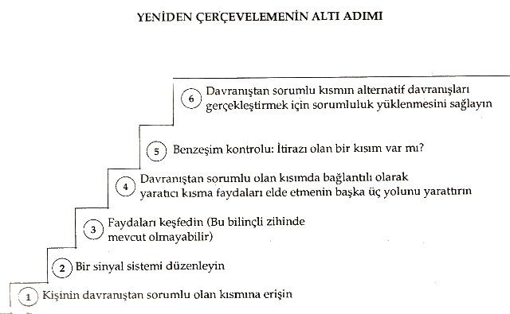
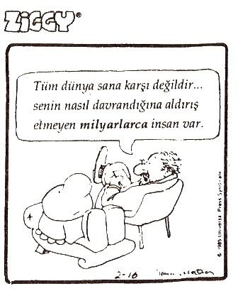

Bazı bağlamlarda, her davranışın bir amacının olduğu; yeniden çerçevelemede unutulmaması gereken önemli noktalardan birisidir. Sigara içiyorsanız, bunu ciğerlerinizi kanser yapıcı
310
maddelerle doldurmak için yapmazsınız. Belirli sosyal ortamlarda daha rahatlattığı ya da gevşeme (rahatlama) hissini verdiği için sigara içersiniz.
Kendinize bir kazanç yaratmak için böyle davranıyorsunuz. Bu nedenle bazı durumlarda, bu davranışın karşıladığı ihtiyaçlara göğüs germeden, bu davranışı yeniden çerçevelemeyi olanaksız bulabilirsiniz. Bu sorun bazen sigara içme alışkanlığını elektro şok terapisiyle tedavi etmeye çalışırken ortaya çıkar.
Bu da belki sigara içmek kadar kötü olan sürekli endişe ya da aşırı yeme hissi gibi bir şoka girmenize neden olabilir. Bu yaklaşımın kötü olduğunu söylemiyorum. Sadece ihtiyaçlarınızı daha iyi karşılayabilmeniz için, bilinçsiz niyetlerinizin keşfedilmesinin yararlı olacağını söylüyorum.
Tüm insan davranışları, şu ya da bu yolla bir ihtiyacı karşılamak için tasarlanmış
uyarlamalı davranışlardır. Kişileri sigara içmekten nefret ettirmek sorun değildir.
Fakat ben sigara içmenin yarattığı gibi olumsuz yan etkileri yaratmadan, ihtiyaçları karşılayacak yeni davranış seçenekleri yarattığıından emin olmak istiyorum. Sigara içme size rahatlık, güvenlik, ilgi odağı olduğunuz hislerini veriyorsa; aynı ihtiyaçları karşılayacak daha iyi bir davranış şekliyle ortaya çıkmak gerekir.
Richard Bandler ve John Grinder; sağladığı önemli yararları koruyarak, istenmeyen davranışlarınızı değiştirmek için altı adımlık bir yeniden çerçeveleme süreci tanımladılar:
Değiştirmek istediğiniz davranış ya da paterni tanımlayınız.
Bilinçsiz zihninizin bu davranışı yaratan kısmıyla iletişim kurun. İçinize gidin ve sorunlarınıza cevap verirken oluşacak vücut duyularında, görsel hayallerde ya da seslerde meydana gelecek herhangi bir değişikliği seçebilecek ve rapor edebilecek şekilde, edilgen bir hazır bulunuşluğu koruyarak, aşağıdaki soruyu kendi kendinize sorun. Soru : "X davranışını yaratan kısmım, benimle bilinçli olarak iletişim kurma isteğinde olacak mıdır?" şeklindedir.
311
X kısmı adını verdiğimiz bu kısımdan, evet şeklinde iletişimde bulunmak istediği zamanki sinyali yoğunlaştırmasını ve hayır şeklinde iletişimde bulunmak istediği zamanki sinyali zayıflatmasını isteyin. Evet şeklinde iletişimde bulunan kısımdan sorarak cevabı test edin. Sonra hayır şeklinde iletişimde bulunan kısımdan sorarak; cevabı test edin ki, iki cevabı birbirinden ayırabilesiniz.
Davranışla niyeti birbirinden ayırın. Sizinle işbirliği yapmak isteyen kısma teşekkür etmelisiniz. Şimdi ona sizin için X davranışını yaratarak ne yapmaya çalıştığını, size bildirmeye istekli olup olmadığını sorun. Bu soruyu sorarken de evet ya da hayır cevaplarını seçebilecek şekilde hazır olmalısınız. Bu davranışın geçmişte size hangi yararları sağladığını not edin ve sonra bu önemli faydaları sağlamayı sürdürdüğü için bu kısma teşekkür edin.
Niyetleri tatmin edecek alternatif davranışlar yaratın. Şimdi içinize dönerek en yaratıcı kısmınızla temasa geçin ve iletişimde bulunduğunuz kısmın niyetlerini tatmin etmek için X davranışından daha iyi ya da X kadar iyi olan üç alternatif davranış yaratmasını isteyin. Üç yeni davranış yarattığında, yaratıcı kısmınızın evet sinyali vermesini sağlayın. Şimdi de yaratıcı kısmınıza, üç yeni davranışın ne olduğunu size açıklayıp açıklamayacağını sorun.
X kısmının yeni seçenekleri kabul etmesini ve ihtiyaç olduğunda bunları yaratma sorumluluğunu üstlenmesini sağlayın. Şimdi X kısmına üç yeni davranışın en azından X davranışı kadar etkili olup olmadığını sorun.
Şimdi de X kısmına, niyet ihtiyaçlarının tatmin edilmesi gerektiği uygun durumlarda, yeni davranışları yaratma sorumluluğunu üstlenme isteğinde olup olmadığını sorun.
Bütünsel bir kontrol yapın. Şimdi içinize dönün ve yeni yapılan anlaşmalara itirazı olan kısımların olup olmadığını ya da tüm kısımların sizi desteklemede anlaşıp anlaşmadıklarını sorun. Sonra geleceğe bir adım atarak, eski davranışı tetikleye-312
bilecek bir durumu hayal edin ve yeni seçeneklerinizden birini kullanarak deneyim yapın ve hâlâ istediğiniz faydaları sağlayıp sağlamadığını kontrol edin.
Gelecekte istenmeyen davranışı tetikleyebilecek başka bir duruma adım atın ve bir diğer yeni seçeneğinizi kullanarak deneyim yapınız.
Diğer kısımların yeni seçeneklere itirazı olduğuna ilişkin bir sinyal alırsanız; hangi kısmın itiraz ettiğini, geçmişte size hangi faydaları sağlamakta olduğunu tanıyarak baştan başlamalı ve onun size sağlanan faydaları sağlayacak ve yeni seçenek kümeleri oluşturacak şekilde X kısmıyla birlikte çalışmasını sağlayın.
Bir kısmınızla konuşmanızdan söz etmek saçma ya da tuhaf gelebilir; fakat, Dr.Erikson, Bandler ve Grinder gibi kişiler taralından oldukça yararlı bulunan temel bir hipnotik paterndir.
Örneğin, sürekli olarak aşırı yemek yiyorsanız; yeni davranış türleri üretmenize neden olan bir swish paterni uygulayabilirsiniz ya da bunu değiştirmek istediğiniz bir davranış olarak tanıyabilirsiniz. Bilinçsiz kısmınızdan bu paternin geçmişte sağladığı faydaları sizinle paylaşmasını isteyebilirsiniz. Belki kendinizi yalnız hissettiğinizde, bu durumu değiştirmek için yiyecekleri kullandığınızı keşfedebilirsiniz. Belki de güvenlik duygusu yaratmanıza yardımcı olarak gevşemenize neden olabilir.
Bundan sonra size ait olma ve arkadaşlık ya da güvenlik ve gevşeme hissi verecek üç yeni seçenek yaratabilirsiniz. Belki genel yapısının insanlarla ilişkinizi kuvvetlendirmeniz ihtimalini beslemesi, arkadaşlarınızla gevşeyeceğinize ilişkin güvence hissi vermesi, aynı zamanda zayıflamanızı sağlayarak ilerde daha iyi bir görünüm kazanma güvencesi vermesi nedeniyle bir sağlık kulübüne üye olabilirsiniz. Bir düşünceye dalarak, tüm evrenle birlik hissini yaratabilir ve böylece kendinizi aşırı yediğiniz zamanlardan daha güvenceli ve gevşemiş
hissedebiliriniz.
Bu alternatifleri oluşturduğunuzda, onların benzeşimli olup olmadıklarına bakın; yani her yönünüzün, gelecekte bu yeni seçenekleri kullanmada destek verme isteği içinde olacağından emin olun. Benzeşimli hissediyorsanız; bu seçenekler sizi des-313

314
tekleyen istediğiniz davranışları üretmenize yardımcı olacak ve aşırı yemek zorunda kalmayacaksınız. Geleceğe gidin ve şimdi ürettiğiniz sonuca dikkat ederek, yeni seçeneklerin etkin kullanımını zihninizde deneyin. Yeni seçenekler için bilinçsiz zihninize teşekkür edin ve yeni davranışlarınızdan hoşlanın. Bir kere istenmeyen eski davranışlarınızdan daha çok bilinçsiz ihtiyaçlarmızı neyin destekleyeceğini keşfedince; üretmeye alıştığınız davranışın yerine istediğiniz yeni davranışı getirebilmek İçin swish paternini bile kullanmak isteyebilirsiniz.
Negatif görünüşlü hemen her deneyim, yeniden çerçevelenerek pozitife dönüştürülebilir. "Muhtemelen bir gün geriye baktığımda buna güleceğim."
deyiniz. Niçin şimdi geriye bakıp gülmüyorsunuz? Bu sadece bir perspektif sorunudur.
Herhangi bir kişinin temsilini swish paterni ya da diğer tekniklerle yeniden programlayabilirsiniz. Fakat kişi eski davranışlarından, yeni geliştirdiği seçeneklerden daha çok fayda sağlıyorsa; onun muhtemelen eski davranışına geri döneceğine dikkat etmek önemlidir. Ayağında nedeni açıklanamayan bir uyuşma olan kadınla çalışır ve bu uyuşmayı yaratmak için kafasında ve fizyolojisinde neler yaptığını bulursanız ve kadın da vücuduna artık uyuşma yaratmayacak sinyal göndermeyi öğrenirse; onun sorunu şimdilik çözümlenmiş
olur. Fakat o eve döndüğünde; kocasının bulaşıkları yıkaması, onunla daha çok ilgilenmesi, ayağına masaj yapması vb. ayakları uyuşukken çok sayıda sağladığı bu ikincil faydaları artık elde edemiyorsa; kadın tekrar hasta olabilir. İlk birkaç hafta ya da ayda, eşinin iyileşmesi nedeniyle koca heyecanlıdır. Bununla birlikte o, iyileştiği için sadece kadının bulaşık yıkamaya başlamasını beklemez, aynı zamanda ayaklarına masajı bırakır ve eşine daha az ilgi gösteriyor gibi görünür.
Kısa bir süre sonra da kadın tekrar hastalanır. Kadın bunu bilinçli olarak yapmaz.
Bilinçsiz zihnine isteklerini daha iyi sağlayan eski davranış sinyallerini ulaştirır ve ayaklarındaki uyuşma aniden tekrar ortaya çıkar.
Böyle bir durumda kadın, kendisine kocasıyla aynı kalitede
315
ki deneyimleri verecek başka davranışlar bulmalıdır. Kadın yeni davranışıyla eskisinden daha çok şey kazanmalıdır. Çalışmalarımın birisinde, sekiz yıldır âmâ olan bir kadın, olağandışı mahir ve dengeli görünüyordu. Sonra kadının ama olmadığını keşfettim. Öyleyse şimdiye kadar niçin ama imiş gibi yaşıyor du?
Kadının görüşü daha önce geçirdiği bir kazada zayıflamıştı. Bu kazadan sonra etrafındaki kişiler ona daha önceki yaşamında hiç görmediği biçimde sevgi gösteriyorlar ve destek oluyorlardı. Buna ek olarak bir de gündelik işlerini yaparken bile diğerlerinin, onun ama olduğunu sandıklarını keşfetmeye baş-
lamıştı. Diğer kişiler kadına özel ilgi gösteriyorlardı. Bu nedenle kadın, kendi kendisini bile kör olduğuna ikna ederek, kazadan sonraki davranış şeklini sürdürdü. Kadın, diğerlerinin kendisine karşı otomatik olarak düşünceli ve sevgi dolu bir tarzda davranmalarını sağlayacak daha güçlü bir yol bulamamıştı. Yabancılar bile ona özel ilgi gösteriyordu. Ancak kadın, ondan uzaklaşmak için daha büyük ya da şimdiki davranışından daha çok fayda sağlayacak bir şey geliştirebilirse; davranışı değişir.
Şimdiye kadar yeniden çerçevelemeyle, negatif algılamaları pozitife dönüştürebileceğimiz yollar üzerinde durduk. Fakat ben sizin yeniden çerçevelemeleri bir terapi, kötü olduğunu düşündüğünüz durumlardan iyi olduğunu düşündüklerinize giden bir yol olarak düşünmenizi istemiyorum.
Yeniden çerçeveleme, gerçekte üç aşağı beş yukarı potansiyel ve olabilirlilik için mecazlardan başka bir şey değildir. Yaşamımızda daha iyi bir şekilde yeniden çerçevelenemeyecek çok az şey vardır.
Gözönüne alınması gereken en önemli çerçevelerden birisi de olabilirliklerdir.
Genellikle bir fikre saplanıp kalırız. Muhteşem sonuçlar alabilecekken kısıtlı tatmin edici sonuçlar alıyor olabiliriz. Şimdi yapmaktan memnun olduğunuz beş
şeyin listesini yapın. Onlar iyi giden ilişkiler, işinizdeki bir şey, çocuklarınızla ya da paranızla yapmakta olduğunuz bir şey olabilir.
Şimdi onları daha iyi olarak hayal edin. Düşünmek için birkaç dakikanızı harcayın. Muhtemelen yaşamınızı büyük ölçüde
316

geliştirecek yollar bularak kendi kendinize şaşıracaksınız. Olabilirlik yeniden çerçevelemesi, hepinizin yapabileceği bir şeydir.Yapılması gereken tek şey; eyleme geçebilmek için potansiyelimizi ve kişisel gücümüzü hazır durumda tutabilecek zihinsel esnekliğe sahip olmaktır.
Bu kitaptaki her şeye uygulanabilecek son bir fikir daha ilave edeyim. Yeniden çerçeveleme, daha büyük sonuçlar üretmek İçin zihinsel alet çantanızdan alıp kullanabileceğiniz bir diğer etkili ustalığa da sahiptir. Kabullerin açıklanması ve neyi iyi yaptığınıza ilişkin yararlı bağlamların bulunmasının devam eden bir süreci olarak, onu daha geniş kapsamda düşünün.
Liderler ve tüm diğer büyük iletişimciler, yeniden çerçeveleme sanatının ustasıdırlar. Meydana gelen herhangi bir şeyi alıp, bunun olabilirlik modelini kurarak, kişilerin nasıl güdüleneceğini ve güçlendirileceğini bilirler.
317
IBM'nin kurucusu Tom YVatson hakkındaki anlatılan meşhur bir öykü vardır.
Onun yardımcılarından birisi, şirkete 1 milyon dolara mal olan korkunç bir hata yapar.Watson'nun bürosuna çağrıldığında; "Sanırım istifa etmemi istiyorsunuz."
der. Watson yardımcısına bakarak; "Şaka mı yapıyorsun? Sadece eğitimin için 10 milyon dolar harcadık" cevabını verir.
Meydana gelen her şeyde alınması gereken değerli bir ders vardır. Gümüş
kaplama ne kadar parlak olursa olsun, onlar daima koyu bir leke bulurlar. Fakat her beceriksiz tutum, üretime karşı her davranış için etkili bir yeniden çerçeveleme vardır. Bir şeyden mi hoşlanmıyorsunuz? Onu değiştirin.
Davranışlarınız sizi destekleyecek yönde değil mi? Başka bir şey yapın. Sadece etkin davranışlar üretmeye giden bir yol vardır, fakat onlara ihtiyacınız olduğunda onları bulabileceğinizden emin oIun. Gelecek bölümde, istediğimiz anda herhangi bir fikir ve yararlı davranışın yeniden nasıl tetikleneceğini öğreneceğiz.
318
BÖLÜM:17
Başarıyı Çağrıştırmak
"Nerede olursanız olun, elinizdekilerle yapabileceklerinizi yapın."
--Theodere Roosevelt
AMERİKAN bayrağını görünce benim gibi tüyleri diken diken olan insanlar vardır. Analitik olarak düşünürseniz, bu tuhaf bir tepki değildir. Bununla birlikte bayrak, renkli ve dekoratif paterni olan bir bez parçasından başka birşey değildir. Onun doğasında sihirli olan hiçbir şey yoktur. Fakat şüphesiz bu yorum; konunun can alıcı noktalarını gözden kaçırmaktadır. Evet, o sadece bir bez parçasıdır. Fakat aynı zamanda, ulusumuzun tüm meziyetlerini ve karakteristiklerini temsil eder. Bu nedenle herhangi bir kişi, bayrağı gördüğünde aynı zamanda ülkemizin temsil ettiği her şeyin güçlü, yankılı bir sembolünü görür.
319
Çevremizdeki sayılamayacak kadar çok şey gibi; bayrak da, belirli durum kümeleriyle bağlantıyı sağlayan duyusal bir uyarıcı, yani çağrıştırıcıdır.
Çağrıştırıcı bir kelime, bir deyim, bir davranış ya da bir nesne olabilir.
Gördüğümüz, işittiğimiz, tattığımız, hissettiğimiz ya da kokladığımız herhangi bir şey olabilir. Çağrıştırıcılar çok büyük bir güce sahiptirler; çünkü anında çok güçlü durumlara erişebilirler. Bayrağı gördüğünüzde olan budur. Derhal; ulusu bir bütün olarak nasıl hissettiğinizi temsil eden güçlü duygu ve duyuları denersiniz.
Çünkü bezin belirli renkleri ve tasarımlarıyla, bu hislerin bağlantısı ya da ilişkisi kurulmuştur.
Dünyamız önemli önemsiz çağrıştırıcılarla doludur. "Winston'm tadı iyidir..."
diye söze başlarsam, büyük bir olasılıkla aklınıza hemen sigara gelecektir.
"Relief kelimesi nasıl hecelenir?" diye sorsam, çoğunuz onu. R-O-L-A-I-D-S
olarak hecelersiniz. Tüm sigaraların tadının kötü olduğunu düşünebilirsiniz.
Muhtemelen R-E-L-I-E-Fin hecelemesini de biliyorsunuzdur. Fakat reklamlar o kadar etkilidir ki, inanmadığınız bir cevabı bile çağrıştırabilir. Aynı cevap her zaman verilir. Birisini görünce; onunla ilgili olan hislerinize bağlı olarak, hemen iyi ya da kötü bir durumun içine girersiniz. Dinlediğiniz bir şarkı, anında durumunuzu değiştirebilir. Bunların hepsi güçlü çağrıştırıcıların sonuçlandır.
Bu kısmın son bölümü önemli bir nedenle çağrıştırıcılara ayrılmıştır.
Çağrıştırma, deneyime süreklilik kazandırmanın bir yoludur. İç temsilimizi ya da fizyolojimizi bir anda değiştirebilir ve yeni sonuçlar üretebiliriz; fakat bu değişiklikleri yapmak için bilinçli olarak düşünmemiz gerekir. Halbuki çağrıştırmayla, üzerinde düşünmeden herhangi bir koşulda istediğiniz bir durumun yaratılmasına otomatik olarak neden olacak tutarlı bir tetikleme mekanizması yaratabilirsiniz. Bir şeyi yeterli etkinlikle çağrıştırdığınızda, istediğiniz zaman o emrinizde olacaktır. Bu kitaptan şimdiye kadar paha biçilmez dersler ve teknikler öğrendiniz. Güçlü, bilinçsiz tepkilerimizi sürekli kullanımımız-320
da tutabilmek için, onları yapıcı bir biçimde kanalize etmenin, bildiğim en etkili tekniği, çağrıştırmadır. Bölümün başındaki Roosvelt'ten alıntıyı tekrar okuyun.
Sahip olduklarımızla en iyisini yapmaya çalışırız. Kullanımımızdaki kaynakları artırmaya çalışırız. Çağrıştırma, güçlü kaynaklarımıza daima erişme garantisi veren bir yoldur. İhtiyaçlarımızı sürekli sağlamayı garantileyen bir yoldur. , Hepimiz düzenli olarak çağrıştırırız. Gerçekte bunu yapmamak olanaksızdır.
Tüm çağrıştırmalar belirli uyarıcılarla; düşüncelerin, fikirlerin, hislerin ya da durumların ilişkilendirilmesiyle yaratılır. Dr. Ivan Pavlov'un çalışmalarını hatırladınız mı? Pavlov aç köpeklerin koklayabileceği, görebileceği, fakat erişemeyecekleri bir yere et koydu. Bu et, köpeklerin açlık hisleri için güçlü bir uyarıcı oldu. Kısa bir süre sonra yoğun bir biçimde salya çıkarmaya başladılar.
Köpekler yoğun bir şekilde salya çıkarma durumundayken,, Pavlov da sürekli olarak belirli bir tonda zil çalıyordu. Kısa bir süre sonra et olmadan, sadece zilin çalınmasıyla da köpekler sanki önlerinde et varmış gibi salya çıkarmaya başladılar. Pavlov açlık durumu ya da salya çıkarmakla zil sesi arasında sinirsel bir bağ yaratmıştı. Bundan sonra köpeklerin salya durumuna girmeleri için sadece zil çalması yeterli oldu.
Biz de insan davranışlarının çoğunun, bilinçsiz olarak programlanmış
cevaplardan oluştuğu bir uyarıcı/cevap dünyasında yaşıyoruz. Örneğin, gerilim içindeki birçok kimse, derhal sigaraya, alkole ya da bazı durumlarda esrara sarılmaktadır. Onlar bunu düşünmeden yaparlar. Tıpkı Pavlov'un köpekleri gibidirler. Gerçekte bu insanların birçoğu, davranışlarını değiştirmek istemektedirler. Davranışlarının bilinçsiz ve kontrol edilemez olduğunu hissederler. Çağrıştırıcılar sizi desteklemiyorsa; bunları istediğiniz duruma otomatik olarak sokacak yeni bir uyarıcı/cevap bağlantısıyla değiştirebilmek için, sürecin bilincinde olmak esastır.
Peki, çağrıştırıcılar nasıl yaratılır? Her ne zaman bir kişi, zihniyle vücudunun kuvvetli bir şekilde bir arada olduğu sürecin
Sınırsız Güç - 21
321
en üst noktasında, belirti uyarıcıların tutarlı ve eşanlı olarak sağladığı yoğun bir durumun içinde olursa; uyarıcılarla durum birbiriyle sinirsel olarak bağlanır.
Sonra bu uyarıcıların katılımının sağlandığı herhangi bir zamanda, otomatik olarak yoğun duruma girilir. Vücudumuzda belirli hisler yaratan ulusal marşımızı söylerken, bayrağa bakarız. Bağlılık andı içerken bayrağı görürüz. Kısa bir süre sonra sadece bayrağa bakmak, bu hisleri kendiliğinden tetikleyecektir.
Bununla birlikte bütün çağrıştırıcılar olumlu değildir. Bazı çağrıştırıcılar, tatsız ya da kötüdürler. Paralı yola girince her zaman aynı virajı çok hızlı dönmek hissine kapılırsınız. Dikiz aynasında yanıp sönen kırmızı ışık gördüğünüzde ne hissedersiniz? Işık sizin durumunuzu otomatik olarak anında değiştirir mi?
Çağrıştırıcının gücünü etkileyen şeylerden birisi de, ilk durumun yoğunluğudur.
Bazı kişiler eşiyle ya da patronuyla kavga etmek gibi tatsız, yoğun bir deneyime sahip olurlar. Bu deneyimden sonra onlar, ne zaman bu kişinin yüzünü görseler, hemen kızgınlık hissine kapılırlar ve bu noktadan sonra ilişki ya da iş bütün tadını kaybeder. Böyle olumsuz çağrıştırıcılara sahipseniz; bu bölüm size, onların yerine olumlu çağrıştırıcıları nasıl koyabileceğinizi öğretecektir. Bu olay, kendi kendinize hatırlamak zorunda kalmadan kendiliğinden gerçekleşecektir.
Çağrıştırıcıların bir çoğu tatlıdır. Beatles'ın bir şarkısını güzel bir yaz günüyle ilişkilendirirseniz; bundan sonra bu şarkıyı her duyuşunuzda, o yaz gününü hatırlarsınız. Kız ya da erkek arkadaşınızla geçirdiğiniz mükemmel bir günün sonunda, birlikte üzerine çikolatalı dondurma konmuş elma turtası yemişseniz; bu andan itibaren sizin en sevdiğiniz tatlı, dondurmalı elma turtasıdır. Pavlov'un köpeklerinin yaptığı gibi onlar hakkında hiç düşünmezsiniz; fakat her gün, belirli bir şekilde cevap verdiğiniz bir koşulu çağrıştıran deneyimleriniz olur.
Çoğumuz çok belirgin bir biçimde gelişi güzel çağrıştırılırız. Radyo, televizyon, günlük yaşamımız; bizi her gün mesaj yağ-
322
muruna tutmaktadır. Bu mesajların bazıları bizim için çağrıştırıcıya dönüşmekte, bazıları ise dönüşmemektedir. Bunların çoğu da tesadüflere bağlıdır. İyi ya da kötü, belirli uyarıcılarla temas ettiğinizde güçlü bir durumdaysanız; muhtemelen bu sizin için bir çağrıştırıcı olacaktır. Uyarıcıların yoğunluğu, güçlü bir bağ ya da çağrıştırma aracıdır. Reklam sloganlarında olduğu gibi, bir şeyi yeteri sıklıkta işitirseniz; büyük bir olasılıkla o, sinir sisteminizde bir çağrıştırıcı olacaktır.
Olumlularını yerleştirebilmek, olumsuzlarını yok edebilmek için çağrıştırma sürecini öğrenmeniz gerekir. Tarihteki bütün liderler, çevrelerindeki kültürel çağrıştırıcıların nasıl kullanılacağını bilenlerdir. Politikacılar, bayrağa sarılarak bu güçlü çağrıştırıcıların sihirinden yararlanmaya çalışırlar. Bayrakla ilişkilendirilmiş
olan tüm duyguların kendileriyle bağlantısının kurulmasına çalışmaktadırlar. En iyi durumda bu süreç, sağlıklı bir vatanseverlik ve ahenk ortak bağını yaratabilir.
Bağımsızlık Bayramı törenlerini seyrederken neler hissettiğinizi düşünün. Bakan olmaya
aday
olanların
hiçbirinin
Bağımsızlık
Bayramı
törenlerini
kaçırmamasında şaşılacak bir şey var mıdır? En kötü durumda çağrıştırıcı, kolektif çirkinliğin korkutucu bir gösterisi olabilir. Hitler bir çağrıştırıcı dâhisiydi.
O, zihnin belirli durumlarıyla duygunun, gamalı haçın, kaz adımıyla yürüyen birliklerin ve büyük mitinglerin arasında bir bağ oluşturdu. Topluluklara sürekli olarak belirli ve benzeri olmayan uyarıcı vererek, onları yoğun durumda tuttu.
Bundan sonra bağlantısını sağladığı duyguları canlandırabilmek için sadece sağ
eliyle kendine özgü "heil" işaretini yapması yetiyordu. Duyguları ve dolayısıyla bir ulusun davranış ve durumlarını kontrol edebilmek için, bu araçları sürekli olarak kullandı.
Yeniden çerçeveleme bölümünde, konulan çerçeveye bağlı olarak, aynı uyarıcının çok değişik anlamlara sahip olabileceğini belirtmiştik. Çağrıştırma olumlu ve olumsuz yönde de yapılabilir. Hitler, parti üyelerini Nazi sembolleriyle kuvvetli, gururlu duygularla olumlu şekilde bağladı. O, bunların aynı za-323
manda da karşıtlarının korku durumlarıyla bağlantısını sağladı.Gamalı haç, Yahudi topluluğu için de baskın birliklerininkiyle aynı anlamı mı taşıyordu?
Elbette hayır. Geçmişte, Yahudilerin olanaksız görünen durumlarda bile bir ulus olmalarında kendilerini korumalarında yardımcı olan, olumlu çağrıştıcı kullanma deneyimleri de vardı. Birçok Yahudi egemenlik haklarını korumak için ne yapılması gerekiyorsa; kendilerini onu yapacak duruma sokmak için,"bir daha asla" şeklindeki işitsel çağrıştırıcıyı kullanır.
Politika analizcilerinin birçoğu Jimmy Carter'ın ABD Başkanlık Bürosu'nun gizemini azaltmaya çalışmasının bir hata olduğuna inanmaktadır. En azından başkanlık döneminin başın da, başkanı selamlamak gibi kuvvetli çâğrıştırıcılarla desteklenmiş olan seromoni ve şatafatları azalttı. Niyet takdir edilebilir, ancak muhtemelen taktik açıdan yerinde bir davranış değildir. Liderlerin en etkili olduğu anlar; desteği harekete geçirebilmek için güçlü çağrıştırıcılardan yararlanabildikleri anlardır. Çok az lider, Reagan kadar özenli bir biçimde kendilerini bayrağa sarmıştır. Onun politikasından hoşlanın ya da hoşlanmayın; politik sembolleri kullanma yeteneğine (ya da danışmanlarının) hayran olmamak elde değildir.
Çağrıştırma en derin duygu ve deneyimlerle sınırlı değildir. Komedyenler çağrıştırma ustalarıdır. İyi komedyenler anında güldürebilmek için fizyolojinin, deyimlerin, özel tonların nasıl kullanılacağını bilirler. Bunu nasıl yapıyorlar? Sizi güldürmek için bir şey yapıyorlar. Siz belirli bir yoğun durumun içindeyken, belirli bir gülüş ya da yüz ifadesi gibi kendilerine özgü uyarıcıları gönderiyorlar.
Richard Pryor bu konunun ustasıdır. Johnny Carson tüm çağrıştırma kültürlerine sahiptir. Yapmak zorunda olduğu tüm iş, gülerken dilini yanağına değdirmektir İzleyicileri; O, daha şakasını bitirmeden gülmeye başlarlar. Daha önce birçok kez yaptığı için, neyin geleceğini ve izleyicileri aynı duruma sokmak için neyin tetikleme görevi yapacağını bilir. Rodney Dangerfield "Eşimi al" deyince ne oluyor? Bu keli-324
melerde doğal olarak bir şey yoktur. Fakat bu ifade çok iyi bilinen bir fıkranın çağrıştırıcısı yapıldığında; bu kelimeyi duyan hemen hemen herkes gülmeye başlar.
Çağnştırıcılardan en çok yararlanabildiğim bir andan örnek ereyim. John Grinder'le birlikte ABD ordusunda değişik alanlarda etkinliği artırmak için bir seri yeni eğitim modelinin yaratılmasıyla ilgili olarak pazarlık yapıyorduk.
Sorumlu general; zamanlama, fiyatlar, yerler vb. konularda çalışmak üzere ilgili subaylarla bizim aramızda bir toplantı düzenledi. Subaylarla, at nalı şeklinde düzenlenmiş büyük bir konferans odasında toplandık. Masanın başında general için ayrılmış bir sandalye vardı. General burada olmasa bile, generalin sandalyesinin odadaki en güçlü çağrıştırıcı olduğu açık olarak anlaşılmaktaydı.
Tüm subaylar sandalyeye karşı son derece saygılıydılar. Kararların, tartışmasız kabul edilen emirlerin verildiği yer, bu sandalye idi. John'la birlikte emin adımlarla sandalyenin arkasına yürümeye, onunla biraz oynamaya ve sonunda oturmaya karar verdik. Bu subayların Generale ve onun sembolüne karşı sahip olduklarının bir kısmını bize transfer edinceye kadar sandalyeyi kullandık.
İstediğim fiyatı söyleme zamanı geldiğinde; generalin sandalyesinin yanında, ayakta, en kararlı, emredici ses ve fizyolojimle ödenmesi gereken fiyatı açıkladım. Daha önce fiyat konusunda çok çetin pazarlıklar yapmıştık; fakat bu kez en küçük bir soru bile sorulmadı. Generalin sandalyesini çağrıştırıcı olarak kullanmamız, adil bir fiyatın üzerinde pazarlıkta zaman geçirmeden anlaşmamızı sağladı. Anlaşmalar sanki benim emirlerimmiş gibi düzenlendi. En üst düzey anlaşmalarda etkin çağrıştırma süreçlerinden yararlanılır.
Çağrıştırma birçok profesyonel atlet tarafından kullanılan bir araçtır. Gerek duymayabilirler ya da ne yaptıklarının farkında olmayabilirler fakat, bu prensibi kullanıyorlar. Başarılı atletler en iyi sonucu elde etmek için ölüm kalım koşullarıyla tetiklenerek ya da çağrıştırılarak en becerikli ve etkin durumlarının içine girerler. Bazılarının tetikleyici olarak kullandıkları belirli 325
şeyler vardır. Tenisçiler topa güçlü vurmak için belirli bir ritmi ya da servis atmadan önce en iyi duruma girebilmek için belirli bir nefes alma paterni uygularlar.
1984 Olimpiyatlarında 1500 m. serbestte altın madalya kazanan Michel O'Brien'le çalışırken, çağrıştırmayı ve yeniden çerçevelemeyi kullandım.
Kendisini sınırlayan inançlarını yeniden çerçeveledim ve çağrıştırıcı olarak başlama tabancasının sesini kullandım (Bu ses ona daha önce rakibini yenerken dinlediği müziği hatırlatıyordu.) ve yüzerken havuzun dibindeki siyah çizgide dikkatini toplamasını sağladım.
Şimdi de kendiniz ve diğerleri için bilinçli olarak bir çağrıştırıcının nasıl yaratılacağını, biraz daha ayrıntılı olarak gözden geçirelim. Bu süreç temel olarak iki adımdan oluşur. Öncelikle kendinizi ya da çağrıştırma yaptığınız kişiyi çağrıştırmak istediğiniz özel duruma sokmalısınız. Sonra kişi bu deneyimin en üst noktasındayken belirli ve tek bir uyarıcıyı tutarlı bir biçimde vermelisiniz.
Örneğin, kişi gülerken tüm vücudunun devreye girdiği, özel bir benzeşim durumundadır. Kulağını belirli bir biçimde ve şiddetle sıkar ve aynı zamanda belirli sesler çıkarırsanız; daha sonra bu uyarıcıyı kullanarak ( kulağını sıkarak ve ses çıkararak) kişiyi güldürebilirsiniz.
Bazıları için çağrıştırıcı oluşturmanın bir başka güvenli yolu da, ondan daha önce deneyimine sahip olduğu, istediği bir durumu hatırlamasını istemektir. Sonra onu bu duruma geri sokun ki, tümüyle ilgili olsun ve o hisleri vücudunda duyabilsin. O bunları yaptıkça yüz ifadeleri, duruşu, nefes alışı gibi fizyolo-jisindeki değişiklikleri gözleyin. Durumu tepe noktasına yaklaşırken, ona hızla belirli uyarıcıları birkaç kez verin.
Kişilerin güvenli duruma daha hızlı girmelerine yardımcı olarak, bu çağrışımcıları genişletebilirsiniz. Örneğin, güvenli hissettiği zaman nasıl durduğunu size göstermesini sağlayın ve duruşu değişirken uyarıcıları verin. Sonra kendisini bütünüyle güvende hissederken, nasıl nefes aldığını sorabilir ve güvende olduğu durumdaki ses tonuyla anlatmasını isteyebilirsiniz. O
326
bunu yaptıkça, aynı uyarıcıyı tekrar verin. Örneğin, her zaman omuzunun aynı noktasına baskı yapın.
ÇAĞRIŞTIRICININ ANAHTARLARI
Durumun yoğunluğu
Zamanlama (Deneyimin tepe noktası)
Uyarıcıların tekliği (eşsizliği, benzersizliği)
Uyarıcıların aynen tekrarlanması
Bir çağrıştırıcıya sahip olduğunuza inandığınızda, hemen onu test etmelisiniz.
Önce kişiyi yeni ya da yansız bir duruma sokun. Bunun en kolay yolu fizyolojisini değiştirtmek ya da çok farklı bir şey düşündürtmektir. Sonra çağrıştırıcınızı test etmek için uygun uyarıcıları verin ve gözleyin. Fizyolojisi istediğiniz durumdaki fizyolojinin aynısı mıdır? Aynı ise, çağrıştırıcınız etkilidir. Değilse, başarılı çağrıştırmanın dört anahtarından birini kaçırmış olabilirsiniz.
1.Çağrıştırıcmın etkili olabilmesi için uyarıcıyı sağladığınızda kişiyi tüm vücuduyla benzeşimli, ilgili duruma sokmalısınız.
Ben buna yoğun durum diyorum. Yoğunluk arttıkça, çağrıştırma kolaylaşır ve etki süresi uzar. Bir kısmıyla bir şey diğer kısmıyla başka bir şey düşünen birini çağrıştırırsanız, uyarıcılar birkaç farklı sinyalle ilişkilenir ve çağrıştırma güçlü olmaz. Daha önce de tartıştığımız gibi; o, bir şey hissetmiş olduğu zamana bakarken siz, onu o duruma çağrıştırırsanız, gelecekte uyarıcıları sağladığınızda tüm gücü ve zihni yerine, sadece gördüğü görüntüyle ilgilenecektir.
2.Uyarıcıyı tepe noktasında vermelisiniz.
Çağrıştırmayı çok erken ya da çok geç yaparsanız, tüm yoğunluğu yakalayamazsınız. Deneyimin tepe noktasını kişiyi du
327
ruma girerken gözleyerek ve şiddet azalmasına dikkat ederek bulabilirsiniz. Ya da tepe noktasına yaklaşırken size anlatmasını isteyerek, O'nun yardımını sağlayabilir ve bu girdiyi uyarıcılarınızı, verme zamanını ayarlamak için anahtar olarak kullanabilirsiniz.
3.Benzersiz uyarıcılar seçmelisiniz.
Çağrıştırıcının beyne, açık ve hatasız sinyal göndermesi esastır. Kişi belirli bir yoğun durumun içine girer ve söz gelimi siz O'nu her zamanki bakışınızla ilişkilendirmeye çalışırsanız; muhtemelen o çok etkili bir çağrıştırıcı olmayacaktır. Çünkü o, benzersiz değildir ve beynin ondan belirli sinyaller alması çok güç olacaktır. Benzer şekilde el sıkışma da çok etkili olmayabilir; çünkü, hepimiz her an el sıkışıyoruz. Bununla birlikte belirli bir şiddet, yer vb.
benzersiz bir şekilde el sıkışabilirsek, etkili olma olasılığı vardır. En iyi çağrıştırıcılar, aynı anda görsel, işitsel, dokunsal vb. birkaç temsil sistemini, beynin özel bir anlamla kolaylıkla ilişkilendirebileceği şekilde olan benzersiz uyarıcılar oluştururlar. Bu nedenle bir kişiyi dokunma ve belirli bir ses tonuyla çağrıştırmak, genellikle sadece dokunmaktan daha etkili olacaktır.
4.Çağrıştırıcının işe varayabilmesi için onu aynen tekrarlamalısınız.
Bir kişiyi bir durumun içine sokar ve kürek kemiğinin belirli bir noktasına belirli bir şiddetle basarsanız; sonra farklı bir yere farklı bir şiddetle basarsanız, çağrıştırıcıyı tetikleyemezsiniz.
Çağrıştırmanız bu dört kurala uyarsa etkili olabilir. Ateş yürüyüşünde öğrettiğim şeylerden birisi de en becerikli durumlarını, pozitif enerjilerini harekete geçirebilmek için çağrıştırıcıların nasıl oluşturulacağıdır. Yumruklarını sıktıkları bir koşullanma süreci aracılığıyla, en güçlü enerjilerini toplamalarını sağlarım.
Akşamın sonunda yumruklarını sıkarak üretken enerjilerinin güçlü dalgalarını hemen hissedebilirler.
328
Şimdi basit bir çağrıştırma alıştırması yapalım. Ayağa kalkın ve istediğinizi yapabileceğinizi bildiğiniz, kendinizi bütünüyle güvenli hissettiğiniz bir anı düşünün. Sonra vücudunuzu aynı fizyolojiye sokun. Bütünüyle güven duyduğunuzda, durduğunuz gibi durun. Bu hissin tepe noktasında yumruğunuzu sıkarak kararlı ve güçlü bir sesle "evet" deyin. Şimdi de bütünüyle güven ve kontrol içinde bulunan kişi gibi konuşun. Bunları yaparken yumruğunuzu aynı şekilde sıkın ve aynı şekilde evet deyin.
Böyle bir an hatırlayamıyorsanız; böyle bir deneyiminiz olsaydı, nasıl olabileceğinizi düşünün. Vücudunuzu, bütünüyle güven ve kontrol içinde olsaydınız, nasıl olacaksa o fizyolojinin içine sokun. Bütünüyle güven içindeymiş
gibi nefes alın. Kitaptaki tüm diğer alıştırmalar gibi bu alıştırmayı da gerçekten yapmanızı istiyorum. Sadece okumanın bir yararı olmayacaktır. Yapmak ilginizi çekecektir.
Şimdi bütünüyle güven durumunun içindeyken; deneyimin en üst noktasında kibarca yumruğunuzu sıkın ve güçlü bir ses tonuyla "evet" deyin. Sahip olduğunuz göz kamaştırıcı fiziksel ve zihinsel kaynaklarınızı kullanma gücünüzün olduğunun farkında olun ve güç ve bir noktada toplanmanın, tüm dalgasını hissedin. Şimdi başlayın ve beş altı kez tekrarlayın. Her defasında sinirsel sisteminizle bu durum arasında bir ilişki kurarak yumruğunuzu sıkıp evet diyerek kendinizi daha kuvvetli hissedin. Sonra durumunuzu, fizyolojinizi değiştirin. Şimdi yumruğunuzu sıkın ve çağrıştırıldığınızda olduğu şekilde evet deyin ve nasıl hissettiğinize dikkat edin. Bunu önümüzdeki birkaç gün içinde tekrar tekrar yapın. En güvenli duruma girin, güçlü durumunuzun farkında olun ve bu durumların tepe noktasında yumruğunuzu benzersiz bir biçimde sıkın.
Çok uzun süre geçmeden, bir yumruk sıkmakla anında istediğiniz duruma girebilirsiniz. İlk bir iki denemede bu gerçekleşmeyebilir; fakat bunu tutarlı bir şekilde gerçekleştirmeniz uzun süre almayacaktır. Durumunuz yeteri kadar yoğun ve uyarıcı
329
larınız benzersiz ise; bir ya da iki tekrarda kendi kendinizi çağrıştırabilirsiniz.
Kendinizi birkaç kez bu şekilde çağrıştırdıktan sonra; kendinizi güç durumda bulduğunuz bir sonraki durumda onu kullanabilirsiniz. Yumruğunuzu sıkabilir ve kendinizi bütünüyle becerikli hissedebilirsiniz. Çağrıştırma böyle bir güce sahiptir; çünkü sinirlerinizi anında bir sıraya sokar. Geleneksel olumlu düşünme, durup düşünmenizi gerektirir. Kendinizi güçlü bir fizyolojinin içine sokmak bile bilinçli bir çaba ve zaman gerektirir. Çağrıştırma, en güçlü kaynaklarınızı anında toplayacak şekilde çalışır.
ÇAĞRIŞTIRICI NASIL OLUŞTURULUR
1.Çağrıştırıcı kullanmak için istediğiniz belirli bir sonucu ve kendiniz ve diğerleri için istenilen sonuca ulaşmada en büyük desteği sağlayacak belirli durumu açıklığa kavuşturun.
2.Ana deneyimi ayarlayın ( kalibre edin ).
3.İstenen duruma girmek için kişiyi sözlü ya da sözsüz iletişim paternlerinizi kullanarak belirleyin ve şekillendirin.
4.Kişinin, durumunun tepe noktasına geldiğini anlamak için duyusal keskinliğinizi kullanın ve tam bu anda uyarıcıyı (çağrıştırıcıyı) verin.
5.Çağrıştırıcıyı;
a.Durumu kırmak için fizyolojiyi değiştirerek
b.Uyarıcıları (çağrıştırıcıyı) tetikleyerek ve cevapların
istenen durum olup olmadığına dikkat ederek,test edin.
Aynı ya da çok benzer becerikli deneyimlerin yığışımlı bir biçimde birbirinin üstüne yığılmasıyla çağrıştırıcıların en güçlü duruma getirilebileceğinin bilinmesi önemlidir. Örneğin benim en güçlü ve kararlı durumlara girme şekillerimden birisi de fiz
330
yolojimi ve duruşumu karate ustalarınınkine benzer şekle sokmaktır. Bu durumda, yüzlerce ateş yürüyüşü, paraşütle serbest atlayış ve bunlara benzer birçok güçlüğün üstesinden geldim. Bu koşulların hepsinde en becerikli duruma girdiğim zaman, deneyimin en tepe noktasında yumruğumu benzersiz bir şekilde sıkarım. Bu nedenle şimdi aynı şekilde yumruğumu sıktığım zaman, tüm güçlü hislerim ve fizyolojilerim sinir sistemimde eşanlı olarak tetiklenmektedir.
O, herhangi bir ilacın yaratması beklenen hislerden daha büyüktür. Bu şekilde gece atlayışları, piramitlerde uyuma, yunuslarla yüzme, ateş yürüyüşleri, sınırlandırmalarımı kırma ve sportif yarışları kazanma deneyimlerini kazanıyorum.
Bu nedenle bu durumun içine girdikçe ve ona yeni, güçlü, olumlu deneyimler ekledikçe; daha çok güç ve daha çok başarı çağrıştırılmaktadır. Bu, başarı çevriminin bir başka örneğidir. Başarı başarıyı getirir. Güç ve beceriklilik daha çok güç ve becerikliliği getirir.
Size üstesinden gelmeniz için bir mücadele öneriyorum. Üç farklı kişiyi olumlu duruma getirecek şekilde çağrıştırıcı. Onlara çoşkulu hislerle dolu oldukları bir anlarını hatırlatın. Bu anı tümüyle yeniden denediklerinden emin olun ve aynı duruma girmeleri için onları bir kaç kez çağrıştırıcı. Sonra onlarla konuşmaya başlayın ve dikkatleri dağılmışken çağrıştırıcıyı test edin. Aynı duruma geri dönüyorlar mı? Dönmüyorlarsa dört anahtarı kontrol edin ve tekrar çağrıştırıcı.
Çağrıştırıcınız istediğiniz durumu tetikleyemiyorsa; dört noktadan birisini uygulamamışsınız demektir. Belki siz ya da karşınızdaki kişi belirli ve tam ilgili bir durumda değildir. Belki çağrıştırıcıyı tepe noktasından sonra uygulamışsınızdır.
Belki uyarılar yeteri kadar belirgin değildir ya da çağrıştırılmış olan deneyi geri getirmeye çalışırken, uyarıcıları aynen tekrarlayamamışsınızdır. Tüm bu örneklerde çağrıştırmanın doğru yapılmasını garantileyebilmek için ihtiyacınız olan şey, duyusal keskinlik ve tekrar çağrıştırırken işe yarar bir çağrıştırıcı elde edinceye kadar yaklaşımınızda uygun değişiklikler yapmaktır.
331
İşte size bir başka görev: Kolayca ulaşabilmek istediğiniz üç ya da beş durum ya da his seçin. Sonra kolayca ulaşabilmeniz için onları vücudunuzun belirli bir parçasıyla çağrıştırıcı. Diyelim ki siz karar vermekte güçlük çeken, fakat bu durumu değiştirmek isteyen bir kişisiniz. Kendinizi daha kararlı hissetmek istiyorsunuz. Çabuk, etkili ve kolayca karar verebilme yeteneğine sahip olduğunuz hissini çağrıştırabilmek için, işaret parmağımızın bir boğumunu seçebilirsiniz. Bundan sonra, yaşamınızda bütünüyle kararlı hissettiğiniz bir anı düşünün. Zihninizde o koşulları canlandırarak hislerinizi tümüyle aynı şekilde, o zaman yaptıklarınızla ilişkilendirin. Geçmişte verdiğiniz bu önemli kararı tekrar kendi kendinize deneyin. Kendinizi en kararlı hissettiğiniz anda yani deneyimin tepe noktasında işaret parmağınızın boğumunu sıkın ve zihninizden, örneğin
"evet" gibi bir ses çıkarın. Şimdi böyle bir başka deneyimi düşünün ve karar verme sürecinin tepe noktasında aynı şekilde boğumu sıkın ve aynı sesi yaratın.
Bir seri güçlü çağrıştırıcı yığını elde etmek için bunu beş' ya da altı kez tekrarlayın. Vermeniz gereken bir kararı ve bilmeniz gereken tüm gerçekleri düşünün. Sonra çağrıştırıcınızı kullanın. Şimdi kararınızı daha çabuk ve kolayca verebilme yeteneğine sahip olabilmelisiniz. İhtiyacınız varsa bir diğer parmağınızı da gevşeme hissini çağrıştırmak için kullanabilirsiniz. Ben yaratıcılık hissini bir parmak boğumumla çağrıştırdım. Şaşkınlık hissinden, yaratıcılık hissine geçmek benim için bir an meselesidir. Şimdi beş durum seçmek ve onları çağrıştırıcı olarak yerleştirmek için zaman ayırın. Onları kullanarak sinir sisteminizi yönlendirmede duyarlılığınızı ve hızı artırmaktan zevk alın. Bunu lütfen şimdi yapın.
Çağrıştırmanın en etkili olduğu zaman, genellikle çağrıştırılan kişinin ne olduğunu bilmediği zamanlardır. Jimmy Carter "İnanışlarına Bağlı Kalmak" isimli kitabında, çağrıştırmanın çok güzel bir örneğini vermektedir. Silahsızlanma görüşmelerinde Brejnev, Jimmy Carter'ın omuzuna elini koyar ve mükemmel bir İngilizceyle "Jimmy, başaramazsak, Tanrı bizi affetmez" di 332
yerek Carter'ı şaşırtmıştır. Seneler sonra Carter bir TV röportajında; Brejnev'i barışçı bir kişi olarak tanımladı ve bu öyküyü anlattı. Röportaj sırasında Carter konuşurken, elini röportajcının omuzuna koyarak, "Onun elini hâlâ omuzumda hissedebiliyorum" dedi. Carter bu deneyimi çok canlı bir biçimde hatırla-maktadır, çünkü Brejnev o'nu ingilizceyi mükemmel kullanarak ve Tanrıdan söz ederek şaşırtmıştır. Carter'ın dini inançlarına çok bağlı olması ve en kritik anda Brejnev'in omuzuna dokunması, açık olarak Carter'ın Brejnev hakkında olumlu izlenimler edinmesine yol açmıştır. Carter'ın duygularının yoğunluğu ve sorunun önemi; onun bu deneyimi yaşamının sonuna kadar hatırlamasını garantilemiştir.
Çağrıştırma, korkuları yenmede ve davranışları değiştirmede çok başarılı bir şekilde kullanılabilir. Size seminerlerimde kullandığım bir çağrıştırma örneği vereyim. Kadın ya da erkek, bir odada karşı cinsten birisiyle karşılaştığında; onunla ilgilenmekte güçlük çekenlerden birisinden bir ricada bulunurum. Son seminerlerimden birisinde, bu ricamı büyük bir istekle yerine getirmek isteyen genç bir adam vardı. Ona tanımadığı bir kadınla konuşurken ya da tanımadığı bir kadına dışarı çıkma teklifi yaparken neler hissettiğini sorduğumda; onda meydana gelen fiziksel tepkileri görebiliyordum. Vücudu çöktü, gözleri aşağıya düştü ve sesi titredi. "Onları rahat bir şekilde yapamıyorum" dedi. Fakat gerçekte, onun herhangi bir şey söylemesine gerek yoktu. Öğrenmek istediklerimi fizyolojisi söylemişti. O'ndan başarabileceğini bildiği güvenli, gururlu, emniyetli bir anını hatırlamasını isteyerek durumunu değiştirdim.
Başını salladı ve ben de o duruma girmesine rehberlik ettim. Güvenli hissettiği zamanlarda olduğu gibi durmasını, nefes almasını ve hissetmesini sağladım.
Güvenli ve gururlu hissettiği zamanlar diğerlerine neler söylediğini ve kendi kendisine neler söylediğini hatırlamasını söyledim. Deneyiminin tepe noktasında, omuzuna dokundum.
333
DURUM DEĞİŞİKLİKLERİNİ AYARLAMANIN
(TEŞHİS ETMENİN) YOLLARI
Aşağıdaki değişikliklere dikkat ediniz: Nefas alma
yer
duraklamalar
hız
şiddet
Göz hareketleri
Alt dudak büyüklüğü
Duruş
Kas tonları
Göz bebeği büyümesi
Deri rengi / yansıtması
Ses
ifade şekli
tempo
renk
ton
şiddet
334
Sonra aynı deneyimi birkaç kez tekrarlattırdım. Her defasında aynı hisleri ve şeyleri duyduğundan emin oldum. Her denememin tepe noktasında aynı çağrıştırma dokunuşunu yaptım. Başarılı çağrıştırmanın aynen tekrarlarla gerçekleştirildiğini unutmayın. Bu nedenle, her defasında aynı şekilde dokunmaya aynı durumu yaratmaya dikkat ettim.
Bir noktadan sonra, onun çok iyi çağrıştırıldığını anladım, artık onu denemem gerekiyordu. Durumunu bozarak, tekrar kadınlar hakkında neler hissettiğini sordum. Derhal eski çöküntülü durumuna dönmeye başladı. Omuzları düştü, nefesi sıklaştı, çağrıştırıcı olarak belirlediğim omuzundaki noktaya dokunduğumda, vücüdu otomatikman becerekli duruma dönmeye başladı.
Çağrıştırma aracılığıyla birisinin güvensiz ya da korku durumundan güvenli duruma ne kadar çabuk geçtiğini gözlemek oldukça ilginçtir.
Sürecin bu aşamasında kişi, çağrıştırıcı olarak belirlediği noktaya dokunarak istediği duruma girmek için tetikleme yapabilir. Bununla birlikte biz bir adım daha ileri gidebiliriz. Bu pozitif durumu, daha önce beceriksizlik hisleri yaratan uyarıcılara şimdi aynı uyarıcıların beceriklilik hislerini yaratması için transfer edebiliriz. Bunun nasıl yapıldığını genç adam örneğimle açıklamaya çalışayım.
Ondan daha önce yaklaşmayı bile hayal edemeyeceği kadar dinleyiciler arasından çekici bir kadın seçmesini istedim. Omuzuna dokununcaya kadar bir an tereddüt etti. O anda duruşu değişti ve çekici bir kadın seçti. Kadından dinleyicilerin önüne gelmesini rica etti. Kadına, bu arkadaş sizden bir randevu almaya çalışacak dediğimde; kadın onun isteğini bütünüyle geri çevirme niyetindeydi. Gneç adamın omuzuna dokundum ve becerikli fizyolojisine girdi, gözlerini açtı, derin nefes almaya başladı ve omuzlarını ileriye attı. Kadına doğru yürüdü ve "Merhaba, nasıl gidiyor?" dedi. Kadın "Beni yalnız bırak" diyerek tersledi. O hiç aldırmadı. Oysa daha önce bir kadına bakmak bile, tüm fizyolojisinin darmadağın olmasına yetiyordu. Şimdi ise sadece gülümsedi.
335
Ben omuzunu tutmayı, o da kadını ikna etme çabasını sürdürdü. Kadın kırıcı sözlerle azarlamayı sürdürdükçe, daha güçlü bir durumda duruyordu. Elimi omuzundan çektikten sonra bile güvenli ve becerikli hissetmeye devam etti.
Güzel bir kadın gördüğünde ya da reddedilmeyle karşılaştığında, onu daha becerikli duruma sokacak yeni bir sinirsel ilişki oluşturmuştum. Kadın sonunda,
"Beni yalnız bırakamaz mısın?" dedi ve o da en derin sesiyle "Gücü görünce tanımıyor musun?" dedi. Bu anda izleyicilerin hepsi birden kahkahalarla gülmeye başladı.
O şimdi bir kadın ya da reddedilmeyle karşılaştığında daha önce kendisini darmadağın hissettiren aynı uyarıcıyla, çok güçlü bir duruma girmektedir.
Kısaca, bir çağrıştırıcıyı aldım ve transfer ettim. Kadın tarafından reddedilirken.
Onu güçlü durumda tutmakla, beyninin; kadının reddetmesiyle güçlü , güvenli durumu arasında ilgi kurmasını sağladım. Kadın reddettikçe daha çok gevşedi, güven duydu ve sakinleşti. Böyle bir dönüşümün bir an içinde gerçekleştiğini görmek çok şaşırtıcı oluyor.
Burada hemen akla gelen soru, "Güzel, fakat bu seminerde gerçekleşiyor.
Gerçek hayatta ne olacak?" sorusudur. Aynı uyarıcı/cevap çevrimi düzenlenir.
Gerçekten de bizimle birlikte olan ve dışarı çıktıkları akşam karşılaştıkları insanlarla, son derece başarılı sonuçlar elde eden insanlar var. Çünkü onların korkuları yok olmuş ve geçmişte asla geliştiremedikleri ilişkileri geliştirmeye başlamışlardır. Üzerinde düşünmezseniz bu, gerçekten şaşırtıcı değildir.
Büyüdükçe reddedilmeye karşı nasıl tepki göstereceğinizi öğrenmek zorunda kaldığınızı unutmayın. Bunun birçok modeli vardır. Şimdi içinden seçim yapabileceğiniz yeni sinirsel cevaplar kümesine sahipsiniz. İki yıl önce bizim seminerlerimize devam eden ve kadınlardan korkan bir adam, şimdi kendisini seven kadınlarla dolu bir ortamda şarkıcılık yapmaktadır. Düzenlediğim "Zihin Devrimi" seminerlerinde bu olayın değişik şekillerini kullanıyorum. Her örnek olayda kişiler çarpıcı bir biçimde değişmektedirler. Çağrıştırmanın bu 336
değişik şekillerini, korkusal tepkileri dönüştürmede de kullanıyorum.
"Sürekli aynı şeyleri yaparsanız, hep aynı sonuçları alırsınız."
— Anonim
Çevremizde sürekli yapıldığı için, çağrıştırmanın farkında olmak esastır. Etkisini gösterirken çağrıştırıcıyı farkedebilirsek, kontrol ederek değiştirebiliriz. Farkına varmazsanız, görünüşte hiçbir nedeni yokken girdiğiniz duruma siz bile şaşıp kalırsınız. Bunun çok yaygın bir örneğini vereceğim. Aileden bir kişinin öldüğünü kabul edelim. Kişi kedere boğulur.. Cenaze töreninde birçok kişi sol kolunun üstüne sempatik bir şekilde dokunarak üzüntülerini bildirirler. Yeteri kadar kişi aynı şekilde dokunmuşsa ve bu süre içinde o da çöküntü durumunda kalmışsa, aynı tür dokunuş aynı yere birçok kez yapılmışsa; kişi çöküntü durumuna çağrıştırılacaktır. Birkaç ay sonra birisi çok değişik bir bağlamda, aynı yere aynı şiddetle dokunursa; kendisi niçin olduğunu anlamasa bile, aynı keder hislerini tekrar duyabilir.
Sizin hiç nedenini bilmeden, aniden çöküntü durumuna girdiğiniz bir deneyiminiz oldu mu? Büyük olasılıkla olmuştur. Artık hayatta olmayan çok sevdiğiniz birisiyle ilişkilendirdiğiniz yankının, hafif bir sesle fon müziği olarak kullanıldığını bile farketmeyebilirsiniz. Ya da baktığınız kişi, ona benziyordur.
Çağrıştırıcıların bilinçli olarak fark edemediğimiz zamanlar çalıştığını unutmayın.
Negatif çağrıştırıcılarla başa çıkmanın birkaç tekniğini vereyim. Birisi aynı anda karşıt çağrıştırıcılara ateş etmektir. Cenaze töreninde tetiklenen elem hissinin çağrıştırılmasını ele alalım. Sol kolunuzun üst kısmında çağrıştırılmışsa; onunla başa çıkmanın bir yolu sağ kolunuzdaki aynı yerde en güçlü, en becerikli karşıt İtişlerinizi çağrıştırmaktır. Çağrıştırıcıları aynı anda tetiklerseniz. Dikkate değer bir şeylerin olduğunu göreceksiniz. Beyin sinir sisteminizde iki olayı birleştirir ve sonra dokunmay-Sınırsız Güç - 22
337
la herhangi birisi çağnştırıldığında; cevap vermek için iki seçeneğe sahip olacaktır. Beyin bu durumda, hemen hemen her zaman daha olumlu olan cevabı seçecektir. Ya pozitif bir duruma girersiniz ya da çağrıştırıcılar birbirinin etkilerini yok eder ve siz de yansız bir duruma girersiniz.
Uzun süreli çok yakın bir ilişkinin geliştirilmesinde, çağrıştırıcının kritik bir rolü vardır. Örneğin tüm ülkenin insanlarıyla aynı tür ilişkileri paylaşmak için eşim Becky ile birlikte çok seyahat ederiz. Tutarlı bir biçimde; güçlü, olumlu durumlara gireriz ve genellikle bu deneyimlerin tepe noktasında da birbirimize bakar ya da dokunuruz. Sonuç olarak ilişkimiz pozitif çağrıştırıcılarla doludur. Ne zaman birbirimize baksak; tüm bu güçlü, sevecen ve mutlu anlar tetiklenir.
Bunun tersine iki eş birbirine tahammül edemeyecekleri noktaya geldiklerinde; birçok kez, neden negatif çağrıştırıcılardır. Birçok ilişkide çiftlerin birbirleriyle pozitif deneyimlerden çok negatif deneyimleri ilişkilendirdikleri bir dönem vardır. Bu durumlarda birbirlerine ilişkilendirdikleri hislerle tutarlı bir biçimde bakarlarsa, bazen ayrılmaları için sadece birbirlerine bakmaları bile yeter. Bu durum özellikle çiftler çok kavga etmeye başlarsa meydana çıkar ve bu kızgın durumlarda sözler bir diğerini incitecek ya da kızdıracak şekilde söylenir.
(Patern kesmeleri hatırlayınız.) Bu yoğun durumlar diğer kişinin yüzüyle ilişkilendirilir. Bir süre sonra onlar bir başkasıyla birlikte olmak isteyebilir. Bu yeni birisi ya da sadece olumlu deneyimlerle ilişkilendirdiği bir kişi de olabilir.
Bir akşam geç saatler bir otele geldiğimizde, Becky ile birlikte buna benzer bir deneyim yaşadık. Otelde ne arabamızı park edecek, ne de bavullarımızı taşıyacak bir kişi yoktu. Bu nedenle resepsiyondaki görevliden bavullarımızı yukarı çıkarttırmasını ve arabamızı park ettirmesini rica ettik. Bize herhangi bir sorun olmadığını söyledi. Bu nedenle biz de odamıza çıktık ve dinlenmeye başladık. Bir saat sonra hâlâ bavullarımız gelmediği için resepsiyona telefon ettik. Uzatmayalım kredi kartlarımız , pasa
338
portlarımız, yeni imzaladığım çekler dahil sahip olduğumuz her şey çalınmıştı.
İki haftalık bir tatil planlamıştık. Ne duruma girdiğimizi tahmin edebilirsiniz.
Kızgın ve alt üst olmuş durumdayken Betty'e baktım. O da aynı durumdaydı.
Yaklaşık on beş dakika sonra alt üst olmanın hiçbir şeyi değiştirmeyeceği gerçeğini kavradım ve her şeyin bir nedeni olduğuna inandığım için burada da bu olayın birisinin işine yaradığını kabul ettim. Bu nedenle durumumu değiştirdim ve yeniden kendimi iyi hissetmeye başladım. Fakat on dakika sonra Becky'ye baktım ve bakarken o gün yapmadığı işler için ona kızmaya başladım.
Eminim ki ben ona çekici gelmiyordum. Sonra durdum ve kendi kendime neler olduğunu sordum. Hiçbir şey yapmamış olmasına rağmen, kaybolan her şeyle ilgili negatif hislerimi Becky ile ilişkilendirmeye başladığım gerçeğini fark ettim.
Ona bakmak kötü şeyler hissetmeme neden oldu. Denediklerimin neler olduğunu ona söylediğimde; benzer şeyleri; benim için, onun denediğini anladım. Sonra ne yaptık? Çağrıştırıcıların etkisini yok ettik. Birbirimizi heyecanlandıracak olumlu şeyler yapmaya başladık. On dakika içinde bunlar, birbirimize bakınca çok olumlu durumlara girmemizi sağladı.
Dünyaca ünlü evlilik ve aile danışmanı Virginia Satir tüm çalışmalarında çağrıştırmayı kullanır. Ulaştığı sonuçlar fevkaladedir. Bandler ve Grinder onu modellerken; onun stiliyle klasik terapicilerin stilleri arasındaki farkı gördüler.
Terapi için bir çift geldiğinde; birçok terapici problemin temelinde, bastırılmış
duyguların ve çiftin birbirlerine karşı duydukları kızgınlığın olduğuna inanır ve kızgınlık vb. tüm hislerini birbirlerine anlatmalarının yararlı olacağını düşünürler. Birbirlerine kızgmlıklarıyla ilgili her şeyi anlatmaya başladıklarında çoğu kez neler olabileceğini hayal edebilirsiniz. Terapiciler, kızgınlık mesajlarını kuvvetli ve ayrıntılı biçimde iletmeleri konusunda onları cesaretlendirirse; birbirlerinin
suratının
görünüşüyle
ilişkilendirecekleri
daha
kuvvetli
çağrıştırıcılar bile yaratabilirler.
Kişi bu hisleri uzun süredir içinde tutuyorsa; bunların ifade
339
edilmesinin kesin olarak yararlı olacağını kabul ediyorum. Bir ilişkide başarı için gerçeği söylemenin gerekli olduğuna inanmakla birlikte, bu sürecin negatif çağrıştırıcıların etkisini gündeme getireceğinden endişe ediyorum. Hepimiz bir tartışmada gerçekten yanlış anlaşılan sözler söylemeye başlamışızdır ve konuştukça durum daha da kötüye gitmiştir. Bu nedenle bir kişi diğerinin gerçek hislerinin ne olduğunu bildiğinde, ne olur? sevdiğiniz bir kişiye ilişkilerinizi anlatmaya başlamadan önce, kendinizi negatif duruma sokmanın oldukça açık birkaç dezavantajı vardır. Virginia Satir, birbirlerine bağırtmak yerine , birbirlerine ilk sevdikleri gibi bakmalarını sağlamaktadır. Hastalarının birbirleriyle ilk sevdikleri günde olduğu gibi konuşmalarını istemektedir. Tedavi süresi içinde birbirlerinin yüzlerini görünce, daha iyi hissetmelerine neden olacak olumlu çağrıştıncıları üst üste yığmaktadır. Bu durumda birbirlerinin duygularını incitmeden, açık iletişim aracılığıyla problemlerini çözebilmektedirler.
Gerçekten de birbirlerini o kadar dikkatli ve duyarlı bir şekilde tedavi etmektedirler ki, gelecekteki problemlerini de çözebilecekleri yeni bir patern oluşturmaktadırlar.
Yaşamınızda sahip olduğunuz en güçlü pozitif deneyiminizi düşünmenizi istiyorum. Deneyimi ve ona ilişkin itişlerinizi sağ elinize alın. Bunu yaparken hayal edin ve sağ elinizde ona sahip olmanın, neye benzediğini hissedin.
Yaptığımız bir işten bütünüyle gurur duyduğunuz bir anınızı düşünün ve deneyimi ve ona ilişkin hislerinizi de sağ elinize koyun. Şimdi de güçlü, olumlu, aşk hislerini hissettiğiniz anlarınızı düşünün ve bunları da sağ elinize koyarak onları elinizde nasıl hissettiğinizi deneyin. Kıkır kıkır güldüğünüz bir anınızı hatırlayın. Bu deneyimi de sağ elinize alın ve aşk beceriklilik, güçlülük akım hislerini elinizin nasıl hissettiğine dikkat edin, sağ elinizde yarattığınız bu güçlü hislerin ne renk aldığına dikkat edin. Zihninize gelen ilk rengi hemen not edin.
Bir araya gelince ne şekil aldıklarına dikkat edin. Onlara bir ses verecek olsanız, hepsinin sesi ne olurdu? Elinizdeki tüm hislerin dokusu nedir? Hepsi bir araya 340
gelip size tek bir güçlü ve olumlu sey söyleselerdi, bu ifade ne olurdu? Tüm hislerden hoşlanın ve elinizi kapatarak onların orada kalmasını sağlayın.
Şimdi de sol elinizi açın ve negatif, alt üst edici, çöküntü verici ya da kızgınlık deneyimi gibi bir şeyi ya da sizi rahatsız edenleri avucunuzun içine koyun.
Korktuğunuz ya da endişelendiğiniz bir şeyi sol elinize koyun. Bunları içinizde hissetmenize gerek yok. Sadece sol elinizde bulunan şeyle ilişkinizi kestiğinizden emin olun. Şimdi onun altbiçemlerinin farkına varmanızı istiyorum. Negatif koşulların sol elinizde yarattığı renk nedir? Bir renk görmüyor ya da hissetmiyorsanız, görüyormuş ya da hissediyormuş gibi yapın. Bir rengi olsaydı o ne renk olurdu? Diğer altbiçemler aracılığıyla çalışan şekli nedir? Hafif mi ya da ağır mı hissediyorsunuz? Dokusu nedir? Ne sesi çıkarıyor? Size bir cümle söyleyecek olsa, ne söyler? Çıkardığı ses nedir? Dokusu nedir ?
Şimdi de çağrıştıncıların çökertilmesi adı verilen işlemi yapacağız. Doğal hisleriniz bu rol için yeterlidir. Yaklaşımlardan birisi, sağ elinizdeki pozitif rengi alıp, onun bir sıvı olduğuna inanmak ve zevk alıp neşeli sesler çıkararak hızlı bir şekilde sol elinize dökmek ve sol elinizdeki negatif çağrıştırıcı, sağ elinizdeki pozitif deneyimin rengini alıncaya kadar bu işlemi sürdürmektir.
Sonra sol elinizin yaptığı sesi de alın ve sağ elinize düşürün. Sağ elinizin ona ne yaptığına dikkat edin. Şimdi sağ elinizin hislerini alın ve sol elinize dökün ve sol elinizde ne yaptıklarına dikkat edin. Avuçlarınız birbirine değecek şekilde ellerinizi birleştirin ve dengelenmiş hissedinceye kadar birkaç dakika o şekilde tutun. Şimdi sağ ve sol elinizdeki renkler, hisler aynı olmalıdır.
İşlem bittiğinde, sol elinizdeki deneyimi nasıl hissettiğinize bakın. Büyük olasılıkla sizi rahatsız eden gücü yok olacaktır. Böyle olmamışsa alıştırmayı tekrar yapın. Farklı albiçemlerle ve daha aktif duyguyla oynayın. Bir ya da iki kez tekrarladık
341
tan sonra; kuvvetli bir negatif çağrıştırıcı olarak kullanılan bir şeyin gücünün, çok büyük oranda kaybolduğunu herkes görebilir. Bu noktada ya iyi hissetmelisiniz ya da en azından deneyimle ilgili hisleriniz yansız olmalıdır.
Birileri sizin durumunuzu alt üst ediyor ve siz bu kişi hakkında hislerinizi değiştirmek istiyorsanız; aynı süreci uygulayabilirsiniz. Gerçekten sevdiğiniz bir kişinin yüzünü sağ elinizde hayal edebilir ve gerçekten sevmediğiniz kişinin yüzünü de sol elinizde hayal edebilirsiniz. Sevmediğiniz kişiye bakarak başlayın ve sonra sevdiğinize daha sonra sevmediğinize bakarak devam edin. Bunu gittikçe hızlanan bir şekilde yaptığınızda, artık kimi sevip sevmediğiniz belli olmaz. Şimdi onu sevmelisiniz ya da en azından rahatsızlık duymamalısınız. Bu alıştırmanın güzelliği bir anda yapılabilmesi ve hemen hemen her şey hakkındaki hissinizi değiştirebilmesidir. Son seminerlerimden birisinde bunu, tüm grupla üç dakikalık bir süreç olarak uyguladım. Gruptaki kadınlardan biri sağ eline gerçekten sevdiği birini ve sol eline de on yıldır konuşmadığı babasının yüzünü koydu. Bu şekilde kadın, babasıyla ilgili negatif hislerini yansızlaştırdı. O
gece babasını eve davet etti. Sabahın dördüne kadar konuştular ve ilişkilerini yeniden geliştirdiler.
Çoçuklarımızı çağrıştırmada eylemlerimizin gücünün farkına varmak önemlidir.
Örneğin, oğlum Joshua bir gün okula gitti ve konuyla ilgili bir grup onlara tanımadıkları kişilerin arabalarına binmemeleri konusunda bir takdim yaptı.
Böyle önemli bir mesajı iletmeleri takdir edilecek bir davranıştır. Ben de oğlumun tekrar uyarılmasını takdirle karşıladım. Mesajın sunuluş biçiminde bir sorun vardı. Grup, trafik okuluna giden yetişkinlere gösterilenlere benzer korkunç görüntüler içeren yansılar gösterdi. Kayıp çocukların posterlerini gösterdiler. Hatta çukurlardan toplanmış genç çocukların vücutlarını gösterdiler. Onlara bir yabancının arabasına binen tüm çocukların bunları kabul ettiğini söylediler. Açık olarak görüldüğü gibi bu, güdülemede temel bir uzaklaşma stratejisidir.
342
Bununla birlikte sonuçlar en azından oğlum için oldukça tahrip edicidir ve sanırım diğer çocuklar için de bu olay geçerlidir. Onların yaptıkları, korku yerleştirmenin eşdeğeridir. Şimdi, benim oğlum eve gelirken; öldürülenlerin büyük, parlak, kanlı görüntüleriyle ilişki kuruyor. O gün oğlum okuldan eve yürümedi ve onu okuldan almak zorunda kaldık. Daha sonraki iki ya da üç gün, geceleri kabus gördü ve kız kardeşiyle birlikte okula yürüyerek gitmedi. Allahtan insan davranışlarını yaratan ve etkileyen prensipleri anlıyorum, olay olduğunda ben şehir dışındaydım ve sonunda olayı öğrendim ve telefonda bir dizi çöküntü çağrıştırmaları yaparak, korkuyu tedavi ettim. Tedaviden sonra okula güçlü, güvenli ve becerikli bir şekilde kendisi yürüyerek gitti. Kendi kendisine bir çılgınlık yapmayacaktı. O kendisini nasıl koruyacağını ve nelerden sakınılması gerektiğini biliyordu. Şimdi kendi korkuyla yaşamaktan çok istediği şekilde bir hayatı yaşamak için güçlendirilmişti.
Takdimi yapanlar; açıktır ki, iyi niyetlerinin dışında bir şey yapmamışlardı.
Bununla birlikte; iyi niyet, çağrıştırmanın etkilerini anlamamanın getirdiği tahribatı önlemeyi garanti etmez. Özellikle küçük çocuklar olmak üzere, insanlar üzerindeki etkilerinize dikkat edin.
Son bir alıştırma daha yapalım. Kendinizi güçlü, becerikli duruma sokun ve en becerikli durumunuzun rengini alın. Aynı şeyi en güçlü, becerikli durumunuzla ilişkilendireceğiniz bir şekil, bir renk ve bir hisle yapın. Daha önce olmadığınız kadar güçlü, mutlu, dengeli hissettiğiniz zaman söyleyeceğiniz cümleyi düşünün.
Sonra korktuğunuz, sizin için negatif çağrıştırıcı olan, hoş olmayan bir deneyiminizi düşünün. Olumlu şekli, olumsuz deneyimin etrafına zihninizde yerleştirin. Bunu yüksek bir inançla yapın ki, çağrıştırıcıyı çözecek bir kuvvetle, negatif çağrıştırıcının üzerinde fiziksel olarak patlatın. Sesi duyun ve en becerikli olduğunuz durumdaki hisleri hissedin. Negatif çağrıştırıcı renk sesinizin içinde çözülürken, gücünüzü dile getirecek birşey söyleyin. Şimdi negatif durum hakkında neler
343
hissediyorsunuz? Büyük bir olasılıkla onun sizi eskisi kadar rahatsız edeceğini hayal edemeyeceğinizi göreceksiniz. Bu işlemi, üç değişik deneyiminizle yaptıktan sonra bir başka kişiyle yapın.
Kitabı yalnız başınıza okuyorsanız; bunlar size garip, hatta aptalca gelebilir.
Fakat onları yaparsanız; inanılmaz derecede güçlü olduklarını göreceksiniz.
Başarının temel öğelerinden birisi sizi negatif ya da beceriksiz durumlara sokan, kendi çevrenizin tetikleyicilerini elimine ederken, kendinize ve diğerlerine pozitiflerini yerleştirebilme yeteneğidir. Bunu gerçekleştirmenin bir yolu, yaşamınızdaki pozitif ve negatif temel çağrıştırıcıların bir şemasını yapmaktır.
Onların temel olarak görsel, işitsel ya da dokunsal uyarıcılardan hangisiyle tetiklendiğine dikkat edin. Çağrıştırıcılarınızı öğrendikten sonra negatiflerini çökertmeye, pozitiflerini de en iyi şekilde kullanmaya çalışmalısınız.
Pozitif durumların etkin bir şekilde nasıl çağrıştrılacağını öğrendikçe, sadece kendiniz için değil diğerleri için de sağlayacağı yararları düşünün. Ortaklarınızla konuştuğunuzu, onları güdülendirdiğinizi, neşeli bir zihinsel çerçeve oluşturduğunuzu ve bu geleceği üretebileceğiniz bir ses tonu, bir ifade ya da dokunuşla çağrıştırdığınızı kabul edin. Bu pozitif zihinsel durumları birkaç kez çağrıştırdıktan sonra herhangi bir anda bu yoğun güdülemeyi açığa çıkarabilirsiniz. İşgörenler daha iyi çalışacaklar, şirketiniz daha kârlı olacak ve herkes daha mutlu olacaktır. Sizi rahatsız eden şeyleri ele alıp, onları değiştirmeye yetecek kadar becerikli ve başanlı hissetmenizi onlara sağlattırırsanız; yaşamınızda sahip olabileceğiniz gücü düşünün. Bunu yapacak güce sahipsiniz.
Çağrıştırma dahil; size, bu kitapta öğrendiğiniz tüm tekniklerle ilgili son bir fikir daha vereyim. Bu tekniklerden herhangi birisinde ustalaşma, inanılmaz derecede yararlıdır. Durağan bir kuyuya taş atarak yaratılan daireler gibi, bu tekniklerden herhangi birisinde gösterilen başarı, arkasından diğer başarıları getirecektir. Ümit ederim, bunları sadece bugün değil yaşamını
344
zın geri kalan süresi boyunca uygularsınız. Karate duruşunda yığınlaştırdığım çağrıştırıcılardan uyguladıkça daha çok güç elde ettiğim gibi, teknikleri öğrendikçe, ustalaştıkça ve kullandıkça kişisel gücünüzü arttırabilirsiniz.
Yaşamınızda yaptığınız ya da yapmadığınız her şey için hislerinizi etkileyen insan deneyimlerinin bir süzgeci vardır. Bu süzgeçler, çağrıştırma ve bu kitapta konuştuğumuz her şeyi etkiler.……..’lar hakkında konuşuyorum.
345
KISIM III
Liderlik:
Mükemmelliğin
Mücadelesi
BÖLÜM:18
Değer Hiyerarşileri:
Başarıya Asıl Değerinin
Verilmesi
"Kendi kendisiyle barış içinde yaşamak istiyorsa; müzisyen müzik yapmalı, ressam resim yapmalı, şair şür yazmalıdır."
— Abraham Maslow
İSTER makine, ister bilgisayar, isterse insan olsun, tüm karmaşık sistemler benzeşim içinde olmak zorundadırlar. Sistemin üst düzeyde çalışması isteniyorsa; parçaların bir bütün halinde çalışması ve her eylemin bir diğer eylemi desteklemesi gerekir. Parçalar aynı anda değişik istikametlere yönelirse; makina uyumlu çalışamayacak ve büyük bir olasılıkla bozulacaktır.
Benzer koşullarda insanlar da uyumlu olmayacaktır. Etkin davranışlar gösterebiliriz; ancak, bu davranışlar en gerekli ihtiyaçlarımızı ve arzularımızı desteklemez ve bizim için önemli olan bazı şeyleri tahrip ederse, içsel bir ikileme düşer ve başarı için çok gerekli olan benzeşimin eksikliğini hissederiz.
İnsan bir
349
şeye sahipken içinden başka bir şey istiyorsa; tam anlamıyla mutluluğa, doyuma ulaşamaz; ya da bir şeyler başarmasına karşın, doğru ya da yanlış hakkındaki inançlarını çiğnemişse; sonuç karmaşasına düşer. Gerçekten değişmek, yetişmek ve başarılı olmak istiyorsak, başarı ya da başarısızlığın nasıl ayırt edileceğine ilişkin; kendimiz ve diğerleri için koyduğumuz kuralların bilincinde olmalıyız. Aksi halde her şeye sahip olabilir, ama hiçbir şeye sahip değilmişiz hissine kapılabiliriz. Bu hissi yaratan da "değer" adını verdiğimiz katı ve kritik öğelerdir.
Değer nedir? Değerler, neyin en önemli olduğunu gösteren size özgü, kişisel inançlarınızdır. Değerlerimiz, gideceğimiz yönü belirleyen pusulalarımızdır.
Benzeşimli ya da bütünlük ve uyum içinde olduğunuzu hissetmeniz; o andaki davranışlarınızın, değerlerinizle uyum içinde olmasından doğar. Değerlerimiz, nelerden uzak durmamız gerektiğini de gösterir. Kısaca hayatımızı yönlendirirler. Her türlü deneyime ne şekilde tepki göstereceğimizi belirlerler.
Değerleri bilgisayarlardaki işletim sistemlerine benzetebiliriz. İstediğiniz programı koyabilirsiniz; ancak, bunu bilgisayarın kabul edip etmeyeceği ya da kullanıp kullanmayacağı, işletim sisteminin fabrikada nasıl programlandığına bağlıdır. Değerler de insan beynindeki yargılama bölümünün işletim sistemine benzer.
Ne giydiğinizden ne sürdüğünüze, nerede yaşadığınızdan, kiminle evlendiğinize, ne seçtiğinizden, yaşamak için ne yaptığınıza kadar her şey değerlerin etkisi altındadır. Her türlü olaya karşı nasıl tepki göstereceğimizi temel olarak değerlerimiz belirler. Onlar davranışları anlamada, tahmin etmede ve bunların asıl anlamlarını çıkarmada kullandığımız anahtarlardır.
Öyleyse iyiyi kötüyü ayıran, doğruyu yanlışı belirleyen ve nelerin yapılacağını, nelerin yapılmaması gerektiğini söyleyen bu güçlü emirler hangi kaynaktan gelmektedir? Değerler; bize özgü, bir hayli duygusal ve birbirleriyle ilişkili inançlar olduğuna göre; inançlar bölümünde incelediğimiz kaynaklardan gelirler. Bebekliğinizden itibaren çevreniz sizi etkiler. Babanız, anne 350
niz sizin temel değerlerinizin oluşmasında büyük rol oynarlar. Neleri söyleyeceğinizi,
neleri
söylemeyeceğinizi,
neleri
yapacağınızı,
neleri
yapmayacağınızı, nelere inanacağınızı, nelere inanmayacağınızı söyleyerek kendi değerlerini size aşılarlar. Bu değerleri benimserseniz, ödüllendirilir ve iyi çocuk olursunuz. Benimsemezseniz, başınız beladadır ve siz kötü çocuksunuz-dur.
Aslında değerlerin birçoğu ödül-ceza tekniğiyle oluşturulur. Yaşlandıkça yaşıtlarınız da bu değerlerin bir başka kaynağı olur. İlk defa sokakta diğer çocuklarla karşılaştığınızda; onların sizden farklı değerleri olduğunu farkedersiniz. Bu durumda ya kendi değerlerinizi çocukların değerleriyle harmanlarsınız ya da değerlerinizi bir kenara bırakırsınız. Böyle yapmazsanız, sizi döverler ya da sizinle oynamazlar. Bütün hayatınız boyunca yeni yaşıt grupları oluşturacak ve yeni değerler kabul edecek, harmanlayacak ya da kendinizinkileri başkalarına kabul ettireceksiniz. Aynı şekilde, hayatınız boyunca kahramanlarınızın hareketlerini takdir edecek ve onlarda olduğunu düşündüğünüz değerleri benimseyeceksiniz. Birçok çocuk; hayran oldukları şarkıcıların uyuşturucuya önem verdiklerini düşündükleri için uyuşturu kullanmaya başlamıştır. Allahtan bugün ünlü kişilerden birçoğu toplum üzerindeki etki ve sorumluluklarının farkına vararak; açıkça uyuşturucu kullanmadıklarını ve bunu onaylamadıklarını belirtmeye çalışıyorlar. Birçok sanatçı, dünyanın iyi yöne gitmesini istediğini her fırsatta dile getiriyor. Böylece birçok kişinin değerleri, olumlu yönde şekilleniyor. Yardım konserleriyle ünlü şarkıcı Bob Geldof, basın ve yayın organlarının aç insanları doyurmak için gerekli parayı sağlamada ne kadar etkili olduğunu anlamış ve diğer ünlü şarkıcıları bu yöne kanalize etmiştir. Bu çabalarıyla, paylaşma ve merhamet değerlerinin gelişmesine yardımcı olmuştur. Bruce Springsteen, Michael Jackson, Kenny Rogers, Bob Dylan, Stieve Wonder, Diana Ross, Lionel Richie ve diğer sanatçılar müzikleriyle açlıktan insanların öldüğünü ve bir şeyler yapmamız gerektiğini anlata
351
rak; paylaşma ve merhamet değerlerine sahip olmayan birçok insana, bu değerleri aşılamışlardır. Bir sonraki bölümde yönlendirmenin nasıl yapılacağı incelenecektir. Şimdilik sadece basın ve yayın organlarının davranışları ve değerleri etkileme gücünü fark etmeniz yeterlidir.
Değerleri sadece kahramanlar yönlendirmez, benzer olay ödül-ceza sisteminin geçerli olduğu iş hayatında da geçerlidir. Patronunuz için çalışmak ve şirkette yükselebilmek için onun bazı değerlerini de benimsemek zorundasınız. Böyle yapmazsanız, terfi etmeniz olanaksızdır. En basitinden kurumun değerlerini benimsemezseniz mutsuz olursunuz. Eğitim sistemimizdeki öğretmenler de öğrencilere kendi değer yargılarını aşılarlar ve çoğu zaman bilinçli ya da bilinçsiz olarak ödül-ceza sistemini kullanırlar.
Toplum içindeki konumumuz değiştikçe; değerlerimiz ve ideallerimiz de değişir.
Şirkette birinci sırayı almayı amaçlar ve başarırsanız, daha çok para kazanacak ve mesai arkadaşlarınızdan da eskisinden daha farklı şeyler bekleyeceksiniz.
Benzer şekilde ne kadar çalışacağınıza ilişkin değerleriniz de değişebilir. Önceleri çok güzel dediğiniz bir araba, sizin için artık güzel olmayabilir. Hatta toplumdaki yeni yerinize uyabilmek için, görüştüğünüz kişilerde bile değişiklik yapabilirsiniz.
Arkadaşlarınızla bir bara gidip bira içmek yerine, firmada büyümeyi planlayan üç iş arkadaşınızla maden suyu içmeyi tercih edebilirsiniz.
Hangi arabayı kullandığınız, nereye gittiğiniz, arkadaşlarınızın kimler olduğu, ne yaptığınız; bunların tümü kişiliğinizi tanımlar. Bunlar aynı zamanda, değerleri de yansıtan, Psikolog Dr. Robert Mc. Murray'ın evintik ego adını verdiği sembolleri de kapsayabilir. Örneğin, birinin ucuz araba kullanması; kendisini düşünmediği ya da harcadığı benzine çok önem verdiği anlamına gelmez. Bunun yerine bu benzeşimsiz davranışlarla; insanların kapıldıkları ana akımın üzerinde olduğunu göstermeye çalışıyor olabilir. Yüksek öğrenim görmüş bir iş adamı ya da 352
bilim adamı; ucuz ve ekonomik bir araba kullanarak kendine ve diğerlerine ne kadar farklı olduğunu kanıtlamak isteyebilir. Barakada yaşayan bir milyarder de yer israfına dikkati çekiyor olabileceği gibi çevresindekilere ve kendi kendine eşsiz değerlere sahip olduğunu göstermek istiyor da olabilir.
Sanırım, değerleri keşfetmenin ne kadar önemli olduğu açıktır. Birçoklarının asıl zorluğu, değerlerinin farkında olmamalarıdır. Genelde insanlar bir şeyi neden yaptıklarını pek bilmezler, yalnızca yapmaları gerektiğini hissederler. İnsanlar kendilerinden farklı değerleri olan insanlardan rahatsızlık duyarlar ve şüpheci davranırlar. İnsanlar, çoğunlukla değerlerini karıştırdıkları için sonuç karmaşasına düşerler. Bu, kişisel bazda böyle olduğu gibi uluslararası bazda da böyledir. Hemen her savaş, değerler için yapılmıştır. Ortadoğu, Kore ve Vietnam'a bakın. Bir ülke bir diğer ülkeyi işgal ettiğinde ne oluyor? İşgalci ülke kendi değerlerini hemen o ülkeye taşıyor. Farklı ülkeler ve farklı insanların farklı değerleri olduğu gibi, her insan için bazı değerler diğerlerinden daha önemlidir.
Hepimizin her şeyin üzerinde tuttuğu bazı değerleri vardır. Bu, kimileri için dürüstlük, kimileri içinse arkadaşlıktır. Bazıları dürüstlük kendileri için önemli olmasına rağmen; bir arkadaşlarını kurtarmak için yalan söyleyebilirler. Niçin böyle yapıyorlar? Çünkü temel değerler hiyerarşisinde onlar için arkadaşlık, dürüstlükten önce gelmektedir. Hem işinize çok önem veriyor, hem de ailenize büyük bağlılık duyuyor olabilirsiniz. Ailenize, beraber olacağınıza söz verdiğiniz bir akşam çalışmanız gerekirse, bir ikilem doğar. Hangisini seçeceğiniz, değerler hiyerarşinizde hangisinin daha önce geldiğine bağlıdır. Bu yüzden ailem değerli ya da işim değerli demek yerine, gerçek değerlerinizi keşfetmeye çalışın.
Böylece hayatınızda ilk defa bazı şeyleri niçin yaptığınızı ve diğerlerinin davranışlarının nedenlerini anlayacaksınız. Değerler, bir insanın nasıl düşündüğünü gösteren en önemli araçlardır.
İnsanlarla etkin olarak ilgilenmek için, onların en çok neye önem verdiklerini yani değer hiyerarşilerini bilmek gerekir. De-Sınırsız Güç - 23
353
ğerlerin göreli önemlerini anlamadıkça, bir kişinin en basit hareketini bile anlamakta güçlük çekeriz. Ancak bir kere anlaşıldığında da kişilerin değişik olaylara nasıl tepki göstereceğini bilmek zor olmayacaktır. Siz de bunu anladığınızda; sizi ikileme düşüren ilişkilerin ve iç temsillerin üstesinden gelebileceksiniz.
Temel değerlerinize sahip çıkmadan başarılı olamazsınız. Kimi zaman ikilem yaratan değerlerin ortak noktasını nasıl bulacağınızı öğrenmek sorun olur. Bir insan yüksek gelirli bir işde çalışıyor, ama paranın bir şeytan olduğunu düşünüyorsa; yalnızca işinin üzerine düşmek yeterli değildir. Problem bu iki de-
ğerin düzeyleriyle ilgilidir. Bir insan, ailesi kendisi için çok önemli olduğundan işine konsantre olamıyor; fakat buna rağmen, bütün zamanını işte geçiriyorsa; ondaki ikilemi ve bunun yarattığı benzeşimsizlik duygusunu ele almalısınız.
Tekrar gözden geçirme ve amacınızı bulma, soruna büyük ölçüde çözüm getirir.
Çok paranız olabilir; ama yaşadığınız hayat değerlerinize ters düşüyorsa hiçbir zaman mutlu olamazsınız. Bunun örneklerini hep görüyoruz. Güç ve para sahibi insanlar; tükenmiş, bitmiş bir hayat sürüyorlar. Bununla birlikte bir Hint Fakiri kadar fakir olsanız bile, hayatınız değerlerinizle uyuşuyorsa, son derece mutlu bir yaşantınız olur.
Hangi değerlerin doğru ya da yanlış olduğu önemli değildir. Size kendi değerlerimi aşılamaya çalışmıyorum. Kendinize destek olmanız, kendinizi güdülemeniz ve yönlendirmeniz için, kendi değerlerinizi bilmeniz önemlidir.
Hepimizin, her türlü durumda en çok isteyeceği şey olan bir özel değeri vardır.
Bu bir iş ya da arkadaşlık olabildiği gibi; özgürlük, aşk ya da güvenlik duygusu da olabilir. Büyük bir olasılıkla verdiğim listeyi okuyunca, siz de kendi kendinize,
"Ben bunların hepsini istiyorum", demişsinizdir. Çoğumuz böyle yaparız. Fakat biz bunların hepsine göreli değerler yükleriz. Birinin bir arkadaşlıktan beklediği çoşkunluk, bir başkasının aşk, bir diğerinin samimi bir iletişim ve dördüncüsünün de güvenlik duygusu olabilir. Ancak birçokları genelde, değerlerinin sıralamasının ya da en
354
çok hangilerini sevdiğinin farkında değildir. Aşka, coşkunluğa ve mücadele etmeye karşı zaafları vardır; ama bunların uyumlu bir şekilde nasıl bir araya getirileceğini bilmezler. Bu ayırımlar çok kritiktir. Bunlar, isteklerinize ulaşıp ulaşamayacağınızı gösterir. Bir başkasının gereksinimlerini, ne olduğunu bilmiyorsanız karşılayamazsınız. Ona da sizin isteklerinizi karşılaması için yardım edemezsiniz. Değerlerinizin sırasını kavrayamazsanız, kullanamazsınız. Değerleri önem derecelerine göre sıralamanın ilk şartı, onları açığa çıkartmaktır.
Kendinizin ya da bir başkasının değerler hiyerarşisini nasıl keşfedersiniz? İlk önce aradığınız değerleri bir çerçeve içine almanız gerekir. Böylece onları özel bir bölümde toplamış olursunuz. Genelde; iş, arkadaşlık ve aile için farklı değerlerimiz vardır. Şöyle sorular sormanız gerekir. "Benim için kişisel bir ilişki-de en önemli şey nedir?" diyelim ki, "Destek hissidir" şeklinde cevap verdiniz. O
zaman da, "Desteğin önemi nedir?" sorusunu sorar ve cevaplarsınız. "Bu, beni seven birileri olduğunu gösterir." "Peki, birisinin beni sevmesinin önemi nedir?"
"İçimi coşkuyla doldurması" şeklinde cevap vererek bir değerler sıralaması elde etmeye başlarsınız.
Değerler hiyerarşisini anlamanın en iyi yolu, kavramları sıraya koymaktır.
Örneğin "Senin için coşkunluk mu yoksa destek mi daha önemlidir?" diye sorduğunuzda, "coşkunluk" diye cevap alıyorsanız; değerler sıralamasında coşkunluk daha üst sıradadır. Sonra, "Coşkunluk mu yoksa sevilmek mi daha önemli?" sorusunu sorarsınız. Cevap "coşkunluk"'sa, bu üçü içinde en üstte coşkunluk vardır. Sonra "Sevilmek mi destek görmek mi daha önemli?"
sorusunu sorarsınız. Karşınızdaki kişinin kafası karışıp, "her ikisi de önemli", diyebilir. Tekrar "Seni seven biri mi yoksa seni destekleyen biri mi daha önemli?" sorusunu sorarsınız. "Beni seven biri daha önemli" cevabını alırsanız; ki, ikinci sırada sevgi, üçüncü sırada destek vardır. Bu işlemi önem derecesi en yüksek değeri ya da aynı düzeydeki değerleri bulabilmek için her büyüklükteki listeye uygulayabilirsi
355
niz. Bu örnekteki kişi kendisini desteklenmiş hissetmese bile, arkadaşlığa büyük önem verebilir. Bununla birlikte bir başka insan, desteği sevgiden üstün tutabilir (gerçekten birçok insanın böyle yaptığını görünce şaşıracaksınız). Bu kişi, kimsenin kendisini desteklemeden sevemeyeceğine inandığı gibi, destek-lenmeden sevildiğine de inanmayacaktır.
İnsanların ödün veremeyeceği değerleri vardır. Örneğin bir insanın en önemli değeri destekse ve desteklenmediğini hissediyorsa; sizinle ilişkisini kesebilir.
Desteği; üçüncü, dördüncü ya da beşinci sıraya koyan; sevgiye en çok önemi veren bir kişi ise, ne olursa olsun sevildiğini hissettiği sürece ilişkisini sürdü-
recektir.
Eminim ki, duygusal bir ilişkide sizin için önemli olan birçok değeriniz vardır. Ben önemli gördüğüm birkaç tanesini aşağıda sıraladım.
Bu liste önemli değerlerin tümünü kapsamaz. Siz, bunlara eklenecek daha önemli değerler bulabilirsiniz. Aklınıza gelenleri hemen şimdi yazın. Sonra da bunları birden on dörde kadar sıralandırın.
Sistematik bir hiyerarşi geliştiremediyseniz, sıralamanın biraz yorucu ve karmaşık gelmesi normaldir. Şimdi bir değeri diğeriyle karşılaştırarak; hangisinin daha önemli olduğunu bulabilirsiniz. İsterseniz listedeki ilk iki değerle başlayalım. Sizce sevgi mi yoksa coşkunluk mu daha önemli? Cevabınız sevgi ise bu, karşılıklı iletişimden de mi önemlidir? Bütün listeyi incele-SEVGİ
KARŞILIKLI İLETİŞİM
EĞLENCE
DESTEK
YARATICILIK
ÇEKİCİLİK
ÖZGÜRLÜK
COŞKUNLUK
SAYGI
OLGUNLUK
MÜCADELE
GÜZELLİK
RUHSAL BÜTÜNLÜK
DÜRÜSTLÜK
356
yip başladığınız ilk değerden daha önemlisi olup olmadığını araştırın. Daha önemlisi yoksa, bu değer listenin en üstünde yer almalıdır. Şimdi listedeki ikinci değere geçin. Coşkunluk mu, karşılıklı iletişim mi daha önemlidir? Cevabınız coşkunluksa, aşağıya doğru devam edin ve bunu bir sonraki değerle karşılaş-
tırın. Herhangi bir karşılaştırmada başlangıç değerinizden farklı bir değer daha önemliyse (burada coşkunluk), bu kez yeni değerle diğerlerini karşılaştırın.
Örneğin, karşılıklı iletişim coşkunluktan daha önemliyse, "Karşılıklı iletişim mi yoksa saygı mı daha önemli?" sorusunu sorarsınız. Cevabınız hâlâ karşılıklı iletişimse, "Karşılıklı iletişim mi yoksa eğlence mi?" sorusunu sorun. Başka bir değer daha önemli çıkarsa, bunu listenin geri kalan değerleriyle karşılaştırın.
Karşılıklı iletişimi listedeki değerlerle karşılaştırıp, en önemli değer olduğuna karar vermişken, listedeki son değer olan dürüstlüğe geldiğinizde; dürüstlüğün daha
önemli
olduğuna
karar
verdiyseniz,
dürüstlüğü
yaratıcılıkla
karşılaştırmanıza gerek yoktur. Çünkü yaratıcılık, daha önce karşılıklı iletişimden önce gelmemişti. Hiyerarşiyi tamamlamak için, bu işlemi tüm değerler için tekrarlayın.
Gördüğünüz gibi, sıralama genelde kolay bir işlem değildir. Bunlardan bazıları, bizim alışık olmadığımız çok ince ayırımlardır. Ayırım açık değilse, daha açık hale getirin. Örneğin "Coşkunluk mu, olgunluk mu daha önemlidir?" diye sorabilirsiniz. "Olgunlaşıyorsam, coşkunum demektir", gibi cevap alırsanız, bu kez "Olgunluk ne demek, coşkunluk ne demek?", diye sorun. Yanıt "Coşkunluk kişisel bir haz duymak, olgunluk da engelleri aşmak demektir" şeklindeyse;
"Kişisel bir haz duymak mı yoksa engelleri aşmak mı daha önemlidir?", sorusunu sorabilirsiniz. Bu işlemler ayırımı kolaylaştıracaktır.
Hâlâ ayırım açık değilse, bu değerlerden birine öncelik verdiğinizde; ne olacağını araştırın. Bu da genellikle, hangi değerin daha önemli olduğunu ortaya çıkaracaktır.
357
Kendi değer hiyerarşinizi oluşturmak, bu kitaptaki en önemli alıştırmalardan birisi olacaktır. Şimdi bir ilişkide neyin en önemli olduğuna karar vermek için biraz zaman ayırın. Şu anda bir ilişkiniz varsa, bunu arkadaşınızla birlikte yapmalısınız. Her ikiniz de birbirinizin en önemli gereksinimlerini ortaya çı-
karacaksınız. Sizin için bir ilişkide önemli olan konuların bir listesini çıkarın.
Bunlar; çekicilik, zevk, eğlence ya da saygı olabilir. Bu listeyi genişletmek için
"Saygının önemi nedir?" diye sorabilirsiniz ve eşiniz, "Bu bir ilişkideki en önemli konudur", diye cevap verebilir. Böylece daha şimdiden bir numaralı değeri buldunuz. Ya da eşiniz " Bana saygı duyulduğunda, kendimi karşımdakiyle bütünleşmiş buluyorum", diyebilir. Şimdi başka bir değeriniz oldu:
"Bütünleşme". Öyleyse sorun, "Bütünleşmenin neyi önemlidir?". Eşiniz cevaplar: "Bir insanla bütünleştiğimde kendimi sevilmiş hissediyorum". O
zaman şöyle sorarsınız: "Sevginin önemi nedir?". Bir ilişkiden beklediğiniz değerlerin çoğunu bulana kadar, bu şekilde devam edin. Şimdi, yukarıda açıklanan teknikle, bunları bir sıraya sokun. Tam anlamıyla içinize sinen bir sıralama elde edene kadar, değerleri birbirleriyle karşılaştırın.
Kişisel ilişkilerinize ait değerler için bir hiyerarşi oluşturduktan sonra, aynı şeyi iş
çevreniz için de yapın. İşinizi inceleyin ve sorun: "Çalışmada benim için önemli olan şey nedir?". Buna, "Yaratıcılık" diye cevap verebilirsiniz. Sonraki kaçınılmaz soru da "Yaratıcılıkta önemli olan nedir?". Cevabı, "Yaratıcı olduğuında kendimi olgunlaşmış hissediyorum" şeklinde ise; "Olgunlaşmanın önemi nedir?"
sorusuyla devam edin. Siz bir anne ya da baba iseniz; aynı işlemi çocuklarınız için de yapmanızı öneririm. Böylece onları güdüleyen değerleri bularak; daha iyi bir anne ya da babalık için gerekli olan kilit noktalan elde edersiniz.
Neler keşfettiniz? Oluşturduğunuz liste hakkında neler düşünüyorsunuz? Size göre liste kesinleşti mi? Kesinleşmemişse, size kesin gelene kadar ek karşılaştırmalar yapın. Birçok insan,
358
en yüksek değerlerini keşfedince şaşırır. Bununla birlikte, değer hiyerarşilerin bilincinde olmakla, neyi niçin yaptıklarını anlarlar. Gerek kişisel ilişkilerinizde, gerekse işinizde sizin için en önemli değerleri tespit ettiniz; artık bunları başarıya ulaşmak için enerjinizi yönlendirmede kullanabilirsiniz.
Yalnızca hiyerarşiyi oluşturmak yeterli olmaz. Daha sonra da göreceğimiz gibi, birçok insan değerlerden söz ederken, aynı kelimelere sizden farklı anlamlar verebilirler. Şimdi değerlerinizin bilincinde olduğunuzu bildiğinize göre, bunların ne anlama geldiğini düşünün.
Bir ilişkideki temel değer sevgi ise, "Sevildiğinizi hissetmeniz ne sağlıyor".
"Birisini sevmenize ne sebep olur?" ya da "Sevilmediğinizi nasıl anlarsınız?" gibi sorular sormalısınız. Bunu en azından ilk dört sıradaki değerler için mümkün olduğu kadar doğrulukla yapmanız gerekir. Tek bir kelime, "sevgi", sizin için bir düzine farklı anlam taşıyor olabilir. Ama bunları ortaya çıkarmaya harcayacağınız zamana değecektir. Bu, kolay bir işlem değildir; bu işlemleri dikkatlice yaparsanız, kendinizi daha iyi tanır ve isteklerinizin gerçekleşip gerçekleşmediğini belirleyen delillere sahip olursunuz.
Tanıdığınız her insan için, böyle uzun vadeli değer sıralaması yapamazsınız. Bu işlemlerin ne kadar tutarlı ve yanlışsız olacağı, bütünüyle sizin sonuçlarınıza bağlıdır. Sonucunuz; eşiniz ya da çocuğunuzla olan uzun vadeli bir ilişkiyse, onlar hakkındaki her şeyi beyninizin en son kapasitesine kadar kullanarak öğrenmek istersiniz. Oyuncusunu güdülemek isteyen bir antrenör ya da olası bir müşterisini değerlendiren bir iş adamıysanız; yine onların değerlerini öğrenmek istersiniz. Ancak buradaki işlem, ailenize yaptığınız kadar derinlemesine olmayacaktır. Şunu unutmayın, ister ilişkiniz bir baba ile oğul arasındaki kadar duygusal, isterse aynı telefonu paylaşan iki satış elemanınki kadar genel olsun; karşınızdaki ile aranızda bir anlaşma vardır. Her ikiniz de diğerinden bazı şeyler beklersiniz. Her ikiniz de diğerini; hareketleriniz, davranışlarınız ya da farkında olmadan
359
değerlerinizle yargılarsınız. Bu değerleri iyi kavrarsanız; nelere ihtiyacınız olacağını ya da davranışlarınızın karşınızdakini nasıl etkileyeceğini, bu ilişkiler başlamadan önce anlayabilirsiniz.
Temel değerler, rastgele yapılan günlük konuşmalardan da çıkarılabilir.
İnsanların kullandıkları kelimeleri dikkatle dinlemek, basit ama değerli bir yöntemdir. İnsanlar, en önemli değerlerini gösteren kelimeleri tekrar tekrar kullanma eğilimindedirler. İki insan coşkulu bir anı beraber paylaşabilir. Biri bu anın, yaratıcılığa ne denli faydalı olduğunu düşünürken, diğeri paylaşılan duyguların ne denli yoğun olduğunu düşünebilir. İnsanları güdülemek ve canlandırmak istiyorsanız, onlar, anlayabilenlere bu yönde başarılı olabilmeleri için çok önemli ip uçları verirler.
Değerleri ortaya çıkarmak, hem iş hayatınızda hem de özel yaşantınızda çok önemlidir. İş hayatında herkesin aradığı bir değer vardır. Bu, bir insanın bir işi kabul ya da reddetmesine neden olan değerdir. Bu değer kimileri için paradır.
İyi para öderseniz, bu kişileri işte tutarsınız. Ama birçokları için bu başka bir şey de olabilir. Örneğin yaratıcılık, mücadele etme, samimi bir iş ortamı gibi.
Yöneticiler yanlarında çalışanların, üst düzeydeki değerlerini bilmek zorundadırlar. Bunu anlamak için, "Bir organizasyona katılmanızı ne sağlayabilir?", diye sorun. Diyelim ki yaratıcı bir çevre cevabını aldınız. Bu kez,
"Başka neler olabilir", diye sorun. Sonuçta bir tercih sırası yapın. Kişi sizin istediğiniz değerlere sahipse; neyin işi bırakmasına neden olabileceğini sorun.
Cevabı "Güven eksikliği" şeklinde aldınız diyelim. Sonraki sorunuz güven eksikliği olsa bile, çalışmaya devam etmesini sağlayacak nedenin ne olduğu olmalıdır. Kimileri güvensizliğin olduğu bir ortaında çalışamayacağını söyleyecektir. Böylece temel değerin güven ortamı olduğu anlaşılır. Kimileri yükselme şansı varsa; güvensizliğin olduğu bir şirkette bile çalışabileceklerini söyleyeceklerdir. Kişinin rahat çalışmasını sağlayacak değerleri anlamak için sormaya devam edin. Böylece onun ne gibi
360
sebeplerle işten ayrılabileceğini öğrenirsiniz. Kullanılan değer kelimeleri, birbirine bağlı güven araçları gibidir. Daha etkili olmak için konuyu açın, "Buna sahip olduğunu nasıl anlarsın?", "Buna sahip olmadığını nasıl anlarsın?". Ayrıca o kişiyle sizin güven anlayışınızın ayrıldığı noktaları bilmek de son derece önemlidir. O, güveni; kararları konusunda hiç soru sorulmaması ya da belirli bir sebep gösterilmeden sorumluluklarının değiştirilmemesi olarak yorumlayabilir.
Bir yönetici için bu değerleri bilmek ya da herhangi bir pozisyondaki birisiyle iletişim kurulduğunda, bunları sezinleyebilmek, paha biçilmez bir yetenektir.
Kendilerine göre her şey iyi gittiğinde, insanları iyi güdüleyebildiğini düşünen bazı yöneticiler vardır. Onlar, bu adama iyi para ödüyorum. Öyleyse o da, şunları şunları yaparak bunun karşılığını vermeli diye düşünürler. Bu, bir bakıma doğrudur. Ancak farklı konulara değer veren insanlar da vardır. Kimileri değer verdikleri insanlarla beraber çalışmak isterler. Bu insanlar ayrılmaya başladığında, iş de eski çekiciliğini kaybeder. Kimileri yaratıcılığa ve aldıkları zevke değer verirler. Bazıları da başka şeylere değer verirler. İyi bir yönetici olmak istiyorsanız; yanınızda çalışan insanların değer verdikleri konuları ve bunları tatmin etmeyi bilmelisiniz. Bunları sağlayamazsanız; o kişiyi kaybedebilir ya da en azından tam verimle çalışmamasına ya da işinden zevk almamasına neden olursunuz.
Bütün bunlar duyarlılık ve zaman ister mi? Elbette; ama beraber çalıştığınız insanlara değer verirseniz, sonuç harcanan zamana değer ve bundan sizinle birlikte karşı taraf da kârlı çıkar. Unutmayın, değerler şaşılacak derecede yüksek bir güce sahiptir. Yönetimi yalnızca değerleriniz açısından değerlendirirseniz; büyük bir olasılıkla kızar ve kendinizi ihanete uğramış hissedersiniz. Değer uçurumları arasında bir köprü kurabilirseniz; hem kendiniz mutlu olursunuz; hem de mutlu bir aileniz, arkadaşlarınız ve çevreniz olur. Her zaman başkalarıyla aynı değerleri paylaşmak gerekli değildir. Ama beraber çalışmak için or
361
tak bir nokta bulmak, onların değerlerinin ne olduğunu anlamak ve desteklemek şarttır.
Değerler, güdülemeyi sağlayan en güçlü araçlardır. Kötü bir alışkanlığı değiştirmenin en iyi yolu, temel değerlere dayandırılmış bir açıklama yapmaktır.
Gurur ve saygıya çok önem veren bir kadın tanıyorum. O çok saygı duyduğu beş
kişiye, bir daha sigara içmeyeceğine ilişkin bir not gönderdi ve sigarayı bıraktı.
Birçok kez sigara içmeye karşı aşırı istek duymasına rağmen; gururu, sigaraya tekrar başlamasına engel oldu. Gurur, onun için sigara içmekten daha önemli bir değerdi. Şimdi sigara içmeyen sağlıklı bir insan oldu. Değerler, davranışlarımızı değiştirmede kullanılabilecek en güçlü araçlardır.
Size bir deneyimimi anlatmak istiyorum. Üç kişilik savunması olan bir üniversite futbol takımıyla birlikte çalışıyordum. Her oyuncunun değişik değerleri vardı.
Değerlerini ortaya çıkarmak için onlara futbolun nesini sevdiklerini, futbolun onlara ne verdiğini sordum.
Birincisi, futbolu ailesini memnun etmenin ve tanrıyı yüceltmenin bir yolu olarak gördüğünü söyledi. İkincisi, güç simgesi olmanın ve zaferin verdiği zevki tattırdığı için sevdiğini söyledi. Azınlıklardan olan üçüncü oyuncu, futbolla ilgili önemli bir değer söyleyemedi. Ona "Futbol oynamanın nesi önemli?" diye sorduğumda, bilmediğini söyledi. Büyük bir olasılıkla, futbol onu yoksulluktan ve kötü bir ev yaşantısından uzaklaştınyordu. Bu nedenle de futbolu niçin sevdiğini açıklayamadı.
Bu üç oyuncuyu güdülemede farklı yöntemler kullanılmalıdır. Birinci oyuncuya, rakiplerini toprağa çivilemekten ya da onları toza bulamaktan; ikinci oyuncuya da Tanrıyı yüceltmekten ve ailesini memnun etmekten söz ederseniz; hiçbir sonuç alamazsınız. Çünkü, sözünü ettiğiniz değerler, onların futbol oynamalarının nedeni değildir.
Üçüncü oyuncunun diğer iki oyuncudan daha yetenekli olduğu, fakat diğerlerine göre yeteneklerini daha az kullandığı biliniyordu. Antrenörler onu güdülemekte zorlanıyorlardı; çün
362
kü belirli bir değere sahip değildi. Bu nedenle, bu oyuncunun diğer alanlardaki değerlerinin kullanılması gerekiyordu. Sonuçta antrenörler, gurur değerini futbola aktararak, bu oyuncuyu güdülemeyi başardılar.
Değerlerin kullanımı, bu kitapta sözünü ettiğimiz diğer konular kadar karmaşık ve naziktir. Unutmayın, kelimeleri kullanırken bir harita kullanıyorsunuz. Fakat harita bölgenin kendisi değildir. Karnım aç ya da arabaya binmek istiyorum dersem, yine bir harita üzerinde çalışıyorum demektir. Aç olmak; çok yemek ya da az bir şeyler atıştırmak anlamına gelebilir. Kafanızdaki araba bir Honda ya da bir Limuzin olabilir. Fakat harita isteğimize oldukça yaklaşmıştır. Sizin karmaşık denkliğiniz benimkine yeteri kadar yakın olduğu için, iletişim kurmakta zorluk çekmiyoruz. Değerler en karmaşık haritalardır. Bu nedenle ben size değerlerimden söz ettiğimde; siz, bir haritanın haritasıyla çalışıyorsunuz demektir. Sizin haritanız benimkinden farklı olabilir. İkimiz de özgürlüğün bizim için en önemli şey olduğunu söylersek; aynı şeyi istediğimizden ya da amaçladığımızdan aramızda bir yakınlık doğabilir.
Aslında olay bu kadar basit değildir. Benim için özgürlük; istediğimi istediğimle, istediğim yerde, istediğim kadar yapmak olabilir. Özgürlük sizin için birisinin sürekli sizinle ilgilenmesi, sizi koruması ve bu korunmuş çevrede yaşamak olabilir. Özgürlük bir diğerine göre; politik sistemin korunması için gerekli bir yapı olabilir.
"Uğrunda ölebilecek bir şeyiniz yoksa; bu, sizin yaşam mücadelesi için uygun olmadığınızı gösterir."
— Martin Luther King Jr.
Değerler böyle bir üstünlüğe sahip oldukları için taşıdıkları duygusal yük de çok büyüktür. İnsanlarla yakınlaşma sağlamanın en emin yolu, onların temel değerlerini önem sıralarına göre bilmektir. İşte bu yüzden, ülkelerini savunan askerler, paralı
363
askerleri her zaman yenerler. İnsanları birbirinden ayırmanın en kolay yolu da, en temel değerleri hakkında ikileme düşmelerini sağlayacak davranışlarda bulunmaktır. Vatanseverlik ya da aile sevgisi gibi bizi en çok ilgilendiren konular, değerlerin bir yansımasıdır. Dolayısıyla değerleriniz arasında kesin bir sıralama yaparak, bir başkasının gereksinim ve kapasitesini gösteren en kullanışlı haritaya sahip olabilirsiniz.
Değerler arasındaki küçük farkların etkileyici ve güçlü yönünü ilişkilerimizde de görürüz. Bir insan eski bir aşk ilişkisinden kalbi kırılmış olarak, "Beni sevdiğini söylüyordu" diyebilir. Kimileri için aşk sonsuza kadar sürecek bir bağlılıktır.
Kimileri için ise; kısa ama yoğun bir birlikteliktir. Böyle bir kişi duygusal yönden hassas olmayabilir ya da yalnızca aşkın ne olduğu hakkında değişik bir karmaşık denkliğe sahip olabilir.
Başkalarının değerlerini anlamak için mümkün olduğu kadar kesin bir harita yapmanın önemi açıktır. Yalnızca kullanılan kelimeleri bilmek yetmez, bu kelimelerin onun için ne anlama geldiklerini de bilmemiz gerekir. Bunu yapmanın en kolay yolu; neyin ne anlama geldiğini, esnek fakat ısrarlı bir şekilde, değer hiyerarşilerinin kesin karmaşık denkliğini elde edinceye kadar sormaktır.
Kimi zaman değerlerin anlamı o kadar farklılık gösterir ki, aynı değerlere sahip gibi görünen insanlar ortak hiçbir şeye sahip olmadıkları gibi; ortak hiçbir değeri yokmuş gibi görünen insanların aslında aynı şeyleri istediklerini görebilirsiniz.
Kimisi için eğlence; uyuşturucu kullanmak, gece yarısı partilerine katılmak ya da sabahlara kadar dans etmek olabilir. Kimisi içinse dağlara tırmanmak, tavşan avlamak ya da yeni ve ilginç olan herhangi bir şeyi yapmak olabilir. Bu kişilerin değerleri arasındaki tek ortak nokta, bunu adlandırmak için kullandıkları kelimedir. Üçüncü bir kişi için eğlence, bir güçlüğü yenme olabilir. Ona eğlence anlamsız ya da zevksiz gelebilir. Diğer yönden onun mücadele gücü diyerek yaptığını, biz eğlence diye yapıyor olabiliriz.
364
Ortak değerler, iyi bir ilişkinin temelini oluştururlar. İki insan birbirine bağlı değerlere sahipse, onların ilişkisi sonsuza dek sürer. Değerleri bütünüyle farklıysa, ilişkileri kısa süreli ve tatsız olur. Çok az ilişki hariç böylesine uç örnekler yoktur. Sonuç olarak iki şey yapmamız gerekir. Önce ortak değerlerin bulunması gerekir ki, bunları karşınızdaki kişiyle aranızda bir köprü olarak kullanabilesiniz. Ronald Reagan ile Gorbaçov'un görüşmelerinde yaptıkları da bu değil midir? Sonra karşınızdakinin temel değerlerini bulun ve bunları olabildiğince destekleyin. Bu ister iş, isterse bir aile ilişkisi olsun; güçlü, destekleyici ve sonsuz bir ilişkinin temelini oluşturur.
Değerler; insanları güdüleyen, benzeşimli olmalarını sağlayan ya da bunların aksini gerçekleştiren etkili kavramlardır. Karşınızdakinin değerlerini biliyorsanız; en son anahtar sizde demektir. Bu bilgiye sahip değilseniz, güçlü davranışlar gösterseniz bile sonuç alamazsınız. Davranışlarınız kişinin değerleriyle çatışıyorsa; ışığı kapayan düğme gibi çalışırlar. Değerler danıştay mahkemesi gibidir. Onlar bir davranışın istenen sonucu verip vermeyeceğine karar veren, en yüksek yargı organıdırlar.
Nasıl ki insanlar, değerlerin ne anlama geldiği hakkında farklı fikirlere sahipse; aynı şekilde bunların tatmin edilip edilmediğini anlamada da farklı yöntemlere sahiptirler.
Kişisel bazda kendinizi kanıtlayabilme yordamınızı bilmeniz; amaçlarınızı düzenlemede çok önemlidir. Şimdi sizden açıklayacağım alıştırmayı yapmanızı istiyorum. En önemli beş değerinizi alın ve bunları inceleyin. Bunların gerçekleştiğine inanmanız için neler olması gerekir. Şimdi bunun cevabını ayrı bir kağıda yazın ve bunların sizi ileriye mi yoksa geriye mi götürdüğüne karar verin.
Kendinizi kanıtlama yordamınızı değiştirebilir ve kontrol edebilirsiniz. Bizim önerdiklerimiz sadece zihinsel yapılardır. Onlar bizi geri götürmemeli, ama bize hizmet etmelidir.
Değerler değişir. Çoğu kez değerlerin bilinçsiz olarak kökten
365
değiştiğini görürüz. Çoğumuzun kanıtlama yordamı uygun değildir ve bizi hayal kırıklığına uğratır. Lisedeyken kendinizi çekici hissedebilmeniz için romantik bir ilgi gerekebilir. Bir yetişkin olarak siz daha zarif yaklaşımlar geliştirebilirsiniz.
Çekiciliğe değer verebilirsiniz; ama bakışlarınız Cherly Tiegs ya da Robert Redford'unkilerle
yarışacak
kadar
iyi
olmadıkça,
kendinizi
çekici
hissetmiyorsanız; şimdiden hayal kırıklığını garantilemişsiniz demektir. Hepimiz, asıl değerlerini sembolize eden bir araç aracılığıyla bir sonuca kilitlenen insanlar tanırız. Onlar kilitlendikleri sonucu elde ettiklerinde, kendileri için hiçbir anlam ifade etmediğini görünce şaşırırlar. Değerler değişir, ama kendimizi kanıtlama yordamları hep aynıdır. Kimi zaman insanlar hiçbir değere bağlı olmayan kendini kanıtlama yordamları kullanırlar. Ne istediklerini bilirler, ama niçin istediklerini bilmezler. Bu yüzden bunu elde ettiklerinde, sonuç onlara, kültürün istemeden verdiği bir serap gibi gözükür. Değerler ve davranışlar arasındaki benzeşimsizlik, "Vatandaş Kane" den "Muhteşem Gatsby" ye kadar uzanan film ve romanların ana teması olmuştur. Değerleriniz ve bunların nasıl değiştiklerini anlamak için bir önsezi geliştirmeniz gerekir. Bölüm 11'de kazanç ve başarınızı incelediğiniz gibi; burada da sizi en çok güdüleyen değerlerinizi dönem dönem gözden geçirmeniz gerekir.
Kendinizi kanıtlama yordamlarınızı gözden geçirmenin bir başka yolu da, mantıklı bir zaman süresi içinde sizi tatmin edici bir düzeye ulaştırıp ulaştırmadıklarını incelemektir. Hayata yeni atılan iki yüksek okul mezununu ele alalım. Bir tanesi için başarı iyi bir aile, yılda 40.000 dolarlık bir kazanç sağlayan bir iş, 100.000 dolarlık bir ev ve sağlık olabilir. Diğeri içinse bu; büyük bir aile, yılda 240.000 dolarlık bir kazanç, 2 milyon dolarlık bir ev, üçgen bir vücut, bir sürü arkadaş, profesyonel bir futbol takımı ve sürücülü bir Rolls-Royce olabilir.
Yüksek ideallere sahip olmak, eğer işe yarıyorsa iyidir. Ben kendim için gerçekten büyük idealler seçtim ve bunları destekleyecek iç temsillerimi geliştirdim.
366
İdealler ve değerler gibi kendini kanıtlama yordamları da değişebilir. İnsanlar başarabilecekleri basit idealleri olursa da mutlu olurlar. Bunlar sizi başarıya ulaşabileceğinize ve rüyalarınızı gerçekleştirebileceğinize inandıran geri beslemelerdir. Kimi insanlar üçgen bir vücut, 2 milyon dolarlık bir ev, bir futbol takımı ve Rolls-Royce gibi ideallerle bütünüyle güdülenebilirler. Bir başkası başarıyı ilk aşamada 10 Km.'lik bir koşuyu bitirmek, 100.000 dolarlık bir ev, bir aşk ilişkisi ya da mutlu bir aile yaşantısı olarak görebilir. Bunları gerçekleştirdikten sonra yeni idealler edinirler. Belki daha yükseğe ulaşabilirler, ama en çok tatmini sağlayan ilk aşamadaki ideallerinin gerçekleşmesidir.
Kendini kanıtlama yordamlarının bir diğer yönü de kesinliktir. Romantizme değer veriyorsanız, kendinizi kanıtlama yordamınızın çekici ve sizi seven biriyle ilişkiye girmek olduğunu söyleyebilirsiniz. Bu, uğrunda birçok zorluğa katlanılacak iyi bir idealdir. Belki de en çok arzu ettiğiniz kişisel özelliklerin ve görünüşlerin bir listesini oluşturursunuz. Bu da iyi bir yöntemdir. Bir başkası ise; kendini kanıtlama olarak sarışın, mavi gözlü, 1.75 m. boyunda, iri göğüslü bir Playboy kızıyla romantik bir ilişkiyi görebilir. O yalnızca bu kesin tanıma ulaşabilirse tatmin olur. Kendinize bir hedef seçmenin hiçbir kötü yanı yoktur, fakat bu kadar kesin ve bağlayıcı olursanız, enerjinizi büyük bir oranda boş yere harcarsınız. Bu yöntem yararlı olabilecek, deneyim kazandırabilecek kişi ve olayların %99'unu gözardı etmenize neden olur. Bu, hayatınız boyunca böyle bir sonuca ulaşamayacağınız anlamına gelmez. Elbette ulaşabilirsiniz. Bununla birlikte, kendinizi kanıtlama kriterlerinizde biraz esneklik göstermeniz, ideallerinizi daha kolay gerçekleştirmenize ve bu isteklerin tatmin edilmesine daha çok yardımcı olacaktır.
Burada yaygın olarak karşılaşılan bir güçlük vardır. Bu da esnekliktir. Unutmayın ki her alanda en çok esnekliğe ve alternatife sahip olan sistem, en etkili ve en başarılı sistemdir. İşin can alıcı noktası, değerlerimizin bizim için çok önemli olmasıdır. Ancak onların önemini, uyguladığımız kendini kanıtlama 367
yordamlanyla vurgulayabiliriz. Dünyanın sınırlandırılmış, hemen hemen başarısızlığı garantileyen bir haritasını seçebilirsiniz. Bir çoğumuzun yaptığı da budur. Başarı kesinlikle şudur ya da budur, iyi bir ilişki şudur diye söylüyoruz.
Böylece sistemin esnekliğini bütünüyle kaldırarak, başarısızlığı garantilemenin en kolay yollarından birini seçiyoruz.
İnsanların uğraşması gereken zor sorunların kaynağı, çoğunlukla değerlerdir.
Kimi zaman aşk ve özgürlük gibi iki ayrı değer bizi ayrı yönlere çekebilir.
Özgürlük her an her istediğinizi yapabilme anlamına gelebilir. Aşk ise, tek bir kişiye duyulan ilgi olabilir. Çoğumuz zaman zaman bu ikilemi, hoş olmayan sonuçlarıyla birlikte yaşarız. Bununla birlikte en çok neye değer verdiğimizi bilmek ve bunu destekleyecek davranışlarda bulunmak önemlidir. Böyle yapmazsak; daha sonra hayatımızda en çok değer verdiğimiz şeyi destekleyecek davranışları göstermemiş olmanın acısını çekeriz. Yüksek dereceli değerlere bağlı davranışlar, düşük dereceli değerlere bağlı davranışların yerini alırlar.
İki ayrı yöne çeken kuvvetli değerler kadar, insanı yıldırıcı başka bir şey yoktur.
Bu, insanda büyük bir benzeşimsizlik yaratır. Bu benzeşimsizlik yeteri kadar uzun sürerse, bir ilişkinin sona ermesine bile neden olabilir. Birinin üzerine, diğerini yok edecek şekilde düşebilirsiniz (özgürlüğünüz gibi). Birini diğerine uydurmaya çalışırsanız (özgürlüğe olan arzunuzu göz ardı etmek gibi), bu şekilde çok kırıcı olabilir ve hayal kırıklığına uğrayabilirsiniz. Ya da çok azımız, değerlerini anlayıp yorumlayabildiği için, genel anlaöda bir hayal kırıklığının ve umutsuzluğun deneyimini yaşarız. Kısa zamanda hayatımızdaki bütün bu acı deneyimler birikir ve bunlar bizi çok yemeye, sigara içmeye ve diğer uygun olmayan davranışlara yöneltir.
Değerlerin nasıl çalıştığını bilmezseniz, uygun bir uzlaşma zemini hazırlamanız çok zor olur. Bunu yapabilirseniz, hem özgürlüğünüzü hem de ilişkinizi kurtarırsınız. Ayrıca kendinizi kanıtlama yordamınızı da değiştirebilirsiniz. Belki lise öğrenci-368
siyken sizce özgürlük, Warren Beatty'nin seks hayatını taklit etmek anlamına gelebilir. Olgunlaştıkça bir aşk ilişkisi size barda tanıştığınız ilk insanla yatağa atlamaktan daha çok özgürlük, rahatlık, beceri ya da zevk verebilir. İşte bu, tam anlamıyla benzeşimsizlik doğuran bir deneyimin, yeniden uygun bir biçimde düzenlenmesidir.
Kimi zaman benzeşimsizlik değerlerden değil, değişik değerler için uygulanan kendini kanıtlama yordamlarından kaynaklanabilir. Başarı ve dine olan bağlılık, her zaman için uyuşmazlık doğurmak zorunda değildir. Hem çok başarılı, hem de dini değerlere çok bağlı bir insan olabilirsiniz. Ama ya başarı için kendinizi kanıtlama yordamınız, sade ve basit bir hayat sürmekse ne olur? Kendinizi kanıtlama yordamınızı yeniden tanımlamanız ya da yaklaşımınızı yeniden gözden geçirmeniz gerekir. Aksi takdirde kendinizi ikilemlerle dolu bir hayatın içinde bulursunuz. Burada R. Mitchell'in hayatını kısıtlarmış gibi görünen, ama aslında onun mutlu ve zengin bir hayat sürebilmesi için gerekli desteği sağlayan inanç sistemlerini hatırlamak faydalı olabilir. Herhangi iki faktör arasında kesin bir ilişki yoktur. Onun için felç olmak, mutsuz olmak anlamına gelmez. Çok zengin olmak dinsiz olmanızı, dininize çok bağlı olmanız da basit bir yaşantı sürdürmenizi gerektirmez.
SDP, birçok deneyimin temel iskeletini değiştirip, onları benzeşimli hale getirecek araçlar geliştirmiştir. Bir zamanlar çok yaygın sorunlardan birisine sahip bir kişiyle çalışmıştım. Bir kadınla romantik bir ilişkisi vardı; fakat aynı zamanda diğer kadınlar tarafından çekici bulunmaya ve onlarla ilişki kurmaya da çok önem veriyordu. Bu yüzden ne zaman bir kadından seksüel sinyaller alsa, ilişkisine verdiği değer nedeniyle suçluluk duyuyordu.
Ne zaman çekici bir kadınla karşılaşsa, çekicilik dizini bu şekilde çalışıyormuş.
Böyle bir kadın görüyor (Ve) ve kendi kendine, "Bu kadın mükemmel bir yaratık ve beni istiyor" diyormuş (Aid). Bu da onu dayanılmaz bir isteğe sürüklüyor (Ki) ve
Sınırsız Güç - 24
369
kimi zaman bu arzu gerçeğe dönüşüyor ve onu harekete geçiriyormuş (Ke).
Fakat hem arzusu, hem de romantik bir maceraya olan isteği, onu ikilemlerle birlikte kararsızlığa itiyormuş.
Ben stratejisine (Ve- Aid- Ki-Ke) şeklinde yeni bir parça eklemesini öğrettim.
Bunu öyle bir ayarladım ki, bir kadın gördükten sonra (Ve) kendi kendine "Bu kadın çok güzel ve beni istiyor" (Aid) diyor. Burada, buna iç işitsel olan, "Ben de beraber olduğum kadını seviyorum" diye bir ek yaptırttım. Ondan beraber olduğu kadını, sevgi dolu bakışları ve gülümsemesiyle birlikte (Ve) gözönüne getirmesini istedim. Bu da onda, beraber olduğu kadına olan sevgisini canlandıracak, yeni bir iç duyuşsal his kazandırdı. Böylece çekici bir kadın gördüğünde ilk önce, "Bu kadın güzel ve beni istiyor" diyor ve hemen arkasından "Ben de beraber olduğum kadını çok seviyorum" diye sevecen bir ses tonuyla ekleme yapıyor ve onun tatlı hayalini zihninde canlandırıyor. Bu işlemleri o kadar çok tekrar ettirdim ki, artık bunlar onun beyninde yer etti.
Aynen Swish paterninde olduğu gibi, ne zaman kendisine doğru gelen bir kadın görse; hemen yeni stratejiyi uygulamaya başlıyor.
Bu strateji, her şeyin yoluna girmesini sağladı. Eski stratejisi, onu aynı anda iki ayrı yöne sevkediyordu. Bu da büyük bir stres yaratıyordu. Aslında yalnızca çekici görünme isteğini bastırmak da onda ikilem ve çatışma yaratacaktı. Bu yeni strateji, hem çekici görünme isteğini tatmin etti, hem de ilişkisini yıpratan ikilemleri ortadan kaldırdı. Şimdi çekici bir kadın görünce birlikte olduğu kadını daha çok özlüyor.
Kendimizi ve diğerlerini anlamak ve güdülemek için değerleri kullanmanın en son yolu, onları metaprogramlarla bütünleştirmektir. Değerler geçirgenliği az olan son süzgeçlerdir. Metaprogramlar ise algılamamızı ve davranışlarımızı düzenleyen işlevsel paternlerdir. Bu ikisini beraberce kullanmayı öğrenirseniz, en güçlü güdüleme paternlerini geliştirebilirsiniz.
Bir zamanlar sorumsuzluğuyla annesini babasını çıldırtan bir gençle ilgilenmiştim. Bu gencin sorunu, sonuçlarını düşün
370
meden anlık kararlar vermekti. Ona göre; bazı nedenlerden ötürü geç saatlere kadar dışarıda kalmak zorunda kalıyorsa; bu onun sorumsuz olduğunu göstermezdi. O, karşılaştığı olaylara anında tepki gösteriyor ( o yöne doğru hareket etmesini sağlayan nesneler) ve sonuçlarını düşünmüyordu (uzaklaşmasını sağlayan nesneler).
Bu gençle oturup konuştuğumda onun metaprogramlarını inceledim. Bir ihtiyaçtan ötürü olayların üzerine gittiğini anladım. Daha sonra değerlerini incelemeye başladım. Onun en önemli üç temel değerinin; emniyet, mutluluk ve güven olduğunu gördüm. Bunlar hayatında gereksinim duyduğu önemli şeylerdi. Bu ipuçlarını kullanarak davranışlarını ayarlama ve aynalama yoluyla, onunla dostluk kurdum. Daha sonra bütünüyle benzeşim içinde ona; yaptıklarının önem verdiği değerleri nasıl yok ettiğini anlattım. Eve haber vermeden çıktığı iki günlük bir geziden henüz dönmüştü. Ailesinin tüm sabrını yitirdiğini ve dolayısıyla önem verdiği ve ailesinde bulduğu emniyet, mutluluk, güven gibi değerleri yitireceğini anlattım. Böyle devam ederse; kendini hiç emniyet, güven ve mutluluk olmayan bir yerde bulacağını söyledim. Bu bir hapishane ya da islahevi olabilirdi. Evde yaşayabilecek kadar sorumluluk sahibi olamıyorsa; ailesi onu kendisinden sorumlu olacak birilerinin bulunduğu bir yere göndermek zorunda kalabilirdi.
Böylece, değerlerine ters düşen ve uzak durması gereken şeyleri vermiş oldum.
Çoğu insan, temel değerlerine zarar vereceklerini anladıklarında, normalinde yapacakları işlerden vazgeçerler. Sonra da yakınlaşması gereken doğru yolu gösterdim. Anne ve babası için kanıtlama yordamı olabilecek görevler verdim.
Böylece ailesi onu destekleyecek güven, emniyet, mutluluk gibi temel değerleri belirleme yeteneğine sahip oldu. Her akşam 22'de evde olacak, bir hafta içinde bir iş bulacak ve her gün evdeki işlerini aksatmadan yapacaktı. Ona 60 gün içinde gözle görülür bir ilerleme kaydedeceğini ve sözlerini tutarsa, ailesinin ona olan güveninin, dolayısıyla mutluluk ve emniyeti
371